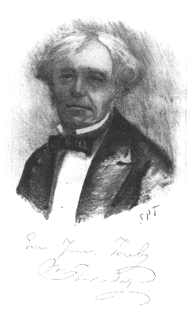
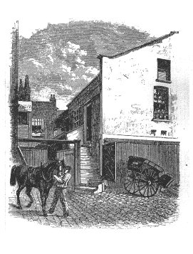
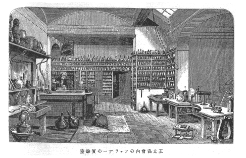
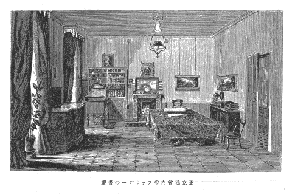
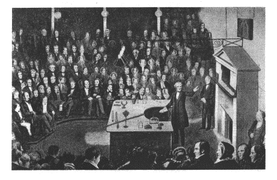
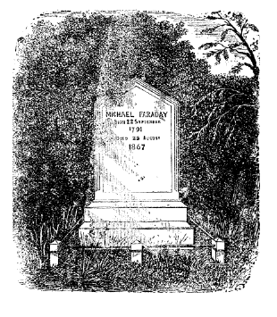

［＃改丁］
偉人の伝記というと、ナポレオンとかアレキサンドロスとか、グラッドストーンというようなのばかりで、学者のはほとんど無いと言ってよい。なるほどナポレオンやアレキサンドロスのは、雄であり、壮である。しかし、いつの世にでもナポレオンが出たり、アレキサンドロスの出ずることは出来ない。文化の進まざる時代の物語りとして読むには適していても、修養の料にはならない。グラッドストーンのごときといえども、一国について見れば二、三人あり得るのみで、しかも大宰相たるは一時に一人のみしか存在を許さない。これに反して、科学者や哲学者や芸術家や宗教家は、一時代に十人でも二十人でも存在するを得、また多く存在するほど文化は進む。ことに科学においては、言葉を用うること少なきため、他に比して著しく世界的に共通で、日本での発見はそのまま世界の発見であり、詩や歌のごとく、外国語に訳するの要もない。
これらの理由により、科学者たらんとする者のために、大科学者の伝記があって欲しい。しかし、科学者の伝記を書くということは、随分むずかしい。というのは、まず科学そのものを味った人であることが必要であると同時に多少文才のあることを要する。悲しいかな、著者は自ら顧みて、決してこの二つの条件を備えておるとは思わない。ただ最初の試みをするのみである。
科学者の中で、特にファラデーを選んだ理由は、第一に彼は大学教育を受けなかった人で、全くの丁稚小僧から成り上ったのだ。学界にでは家柄とか情実とかいうものの力によることがない、腕一本でやれるということが明かになると思う。また立身伝ともいえる。次に彼の製本した本も、筆記した手帳も、実験室での日記も、発見の時に用いた機械も、それから少し変ってはいるが、実験室も今日そのまま残っている。シェーキスピアやカーライルの家は残っている。ゲーテ、シルレルの家もあり、死んだ床も、薬を飲んだ杯までもある（真偽は知らないが）。ファラデーのも、これに比較できる位のものはある。科学者でファラデーほど遺物のあるのは、他に無いと言ってよい。それゆえ、伝記を書くにも精密に書ける。諸君がロンドンに行かるる機会があったら、これらの遺物を実際に見らるることも出来る。
第三に、何にか発見でもすると、その道行きは止めにして、出来上っただけを発表する人が多い。感服に値いしないことはないが、これでは、後学者が発見に至るまでの着想や推理や実験の順序方法について、貴ぶべき示唆を受けることは出来ない。あたかも雲に
ファラデーの論文には、いかに考え、いかに実験して、それでは結果が出なくて、しまいにかくやって発見した、というのが、偽らずに全部書いてある。これでこそ発見の手本にもなる。
またファラデーの伝記は決して無味乾燥ではない。電磁気廻転を発見して、踊り喜び、義弟をつれて曲馬見物に行き、入口の所でこみ合って喧嘩をやりかけた壮年の元気は中々さかんである。莫大の内職をすて、［＃「莫大の内職をすて、」は底本では「莫大の内職をすて、」］宴会はもとより学会にも出ないで、専心研究に従事した時代は感嘆するの外はない、晩年に感覚も鈍り、ぼんやりと
前編に大体の伝記を述べて、後編に研究の
大正十二年一月
著者識す。
［＃改丁］［＃ページの左右中央］
［＃改丁］
前世紀の初めにロンドンのマンチエスター・スクエーアで、走り廻ったり、球をころがして遊んだり、おりおり妹に気をつけたりしていた子供があった。すぐ側のヤコブス・ウエルス・ミュースに住んでいて、学校通いをしていた子供なのだ。通りがかりの人で、この児に気づいた者は無論たくさんあったであろうが、しかし誰れ一人として、この児が成人してから、世界を驚すような大科学者になろうと思った者があろうか。
この児の生れたのは今いうたミュースではない。只今では大ロンドン市の一部となっているが、その頃はまだロンドンの片田舎に過ぎなかったニューイングトン・ブットが、始じめて

ヤコブス・ウェルス・ミュースの家
ファラデーの家はアイルランドから出たという言い伝えはあるが、確かではない。信ずべき記録によると、ヨークシャイアのグラッパムという所に、リチャード・ファラデーという人があって、一七四一年に死んでいるが、この人に子供が十人あることは確かで、その十一番目の子だとも、または甥だともいうのに、ロバートというのがあった。一七二四年に生れ、同八六年に死んでいるが、これが一七五六年にエリザベス・ジーンという女と結婚して、十人の子を挙げた。その子供等は百姓だの、店主だの、商人だのになったが、その三番目に当るのが一七六一年五月八日に生れたジェームスというので、上に述べた鍛冶屋さんである。ジェームスは一七八六年にマーガレット・ハスウエルという一七六四年生れの女と結婚し、その後間もなくロンドンに出て来て、前記のニューイングトンに住むことになった。子供が四人できて、長女はエリザベスといい一七八七年に、つづいて長男のロバートというのが翌八八年に、三番目のミケルが同九一年に、末子のマーガレットは少し間をおいて一八〇二年に生れた。
一七九六年にミュースに移ったが、これは車屋の二階のささやかな借間であった。一八〇九年にはウエーマウス町に移り、その翌年にジェームスは死んだ。後家さんのマーガレットは下宿人を置いて暮しを立てておったが、年老いてからは子供のミケルに仕送りをしてもらい、一八三八年に
かように家が貧しかったので、ミケルも自活しなければならなかった。幸いにもミュースの入口から二・三軒先きにあるブランド町の二番地に、ジョージ・リボーという人の店があった。文房具屋で、本や新聞も売るし、製本もやっていた。リボーは名前から判ずると、生来の英国人では無いらしい。とにかく、学問も多少あったし、占星術も学んだという人である。
一八〇四年にミケルは十三歳で、この店へ走り使いをする小僧に雇われ、毎朝御得意先へ新聞を配ったりなどした。骨を惜しまず、忠実に働いた。ことに日曜日には朝早く御用を仕舞って、両親と教会に行った。この教会との関係はミケルの一生に大影響のあるもので、後にくわしく述べることとする。
一年してから、リボーの店で製本の徒弟になった。徒弟になるには、いくらかの謝礼を出すのが習慣になっていた。が、今まで忠実に働いたからというので、これは免除してもらった。
リボーの店は今日でも残っているが、行って見ると、入口の札に「ファラデーがおった」と書いてある。その入口から左に入った所で、ファラデーは製本をしたのだそうである。
かように製本をしている間に、ファラデーは単に本の表紙だけではなく、内容までも目を通すようになった。その中でも、よく読んだのは、ワットの「心の改善」や、マルセットの「化学
否、ファラデーはただに本を読んだだけでは承知できないで、マルセットの本に書いてある事が正しいかどうか、実験して見ようというので、ごくわずかしかもらわない小遣銭で、買えるような簡単な器械で、実験をも始めた。
ファラデーはある日
これを見ると、聴きたくてたまらなくなった。まず主人リボーの許可を得、それから鍛冶職をしておった兄さんのロバートに話をして、入場料を出してもらい、聴きに行った。これが即ちファラデーが理化学の講義をきいた初めで、その後も続いて聴きに行った。何んでも一八一〇年の二月から翌年の九月に至るまでに、十二三回は聴講したらしい。
そのうちに、タタム氏と交際もするようになり、またこの人の家には書生がよく出はいりしたが、その書生等とも心易くなった。そのうちには、リチャード・フィリップスというて、後に化学会の会長になった人もあり、アボットというて、クエーカー宗の信者で、商店の番頭をしておった人もある。後までも心易く交際しておった。アボットと往復した手紙がベンス・ジョンスの書いたファラデー伝の中に入れてあるが、中々立派に書いてある。そのうちには、ファラデーが時々物忘れをして困るというような事も述べてある。ファラデーは随分と物忘れをして、困ったので、その発端は既にこの時にあらわれている。仕方がないので、後にはポケットにカードを入れて置いて、一々の用事を書きつけたそうである。
またアボットの後日の話によれば、ファラデーが自分の家の台所へ来て、実験をしたこともあり、台所の
ファラデーはタタムの講義をきくにつれて、筆記を取り、後で立派に清書して、節を切り、実験や器械の図をも入れ、索引を附して四冊とし、主人のリボーに献ずる由を書き加えた。
この筆記を始めとして、ファラデーが後になって聴いたデビーの講義の筆記も、自分のした講義の
リボーの店には、外国から政治上の事で脱走して来た人達が
ファラデイの聴いたのはタタムの講義だけでは無かった。王立協会のサー・ハンフリー・デビーの講義もきいた。それはリボーの店の御得意にダンスという人があって、王立協会の会員であったので、この人に連れられて聞きに行ったので、時は一八一二年二月二十九日、三月十四日、四月八日および十日で、題目は塩素、可燃性および金属、というのであった。これも叮嚀に筆記を取って置いて、立派に清書し、実験の図も入れ、索引も附けた。だんだん講義を聴くにつれ、理化学が面白くなって来てたまらない。まだ世間の事にも暗いので、「たとい
そうこうしている中に、一八一二年十月七日に製本徒弟の年期が終って、一人前の職人となり、翌日からキング町に住んでいるフランス人のデ・ラ・ロッセというに傭われることになった。ところが、この人は
デビーは返事をよこして、親切にもファラデーに面会してくれた。この会見は王立協会の講義室の隣りの準備室で行われた。その時デビーは「商売変えは見合わせたがよかろう。科学は、仕事がつらくて収入は少ないものだから」というた。この頃デビーは塩化窒素の研究中であったが、これは破裂し易い物で、その為め目に負傷をして
 衝を起したことがある。自分で手紙が書けないので、ファラデーを書記に頼んだことがあるらしい。多分マスケリーの紹介であったろう。しかしこれは、ほんの数日であった。
衝を起したことがある。自分で手紙が書けないので、ファラデーを書記に頼んだことがあるらしい。多分マスケリーの紹介であったろう。しかしこれは、ほんの数日であった。その後しばらくして、ある夜ファラデーの家の前で馬車が止った。御使がデビーからの手紙を持って来たのである。ファラデーはもう衣を着かえて寝ようとしておったが、開いて見ると、翌朝面会したいというのであった。
早速翌くる朝
それで、一八一三年三月一日より助手になった。俸給は一週二十五シリング（十二円五十銭）で、なお協会内の一室もあてがわれ、ここに泊ることとなった。
どういう仕事をするのかというと、王立協会の幹事との間に作成された覚書の今に残っているのによると、「講師や教授の講義する準備をしたり、講義の際の手伝いをしたり、器械の入用の節は、器械室なり実験室なりから、これを講堂に持ちはこび、用が済めば奇麗にして元の所に戻して置くこと。修理を要するような場合には、幹事に報告し、かつ色々の出来事は日記に一々記録して置くこと。また毎週一日は器械の掃除日とし、一ヶ月に一度はガラス箱の内にある器械の掃除をもして塵をとること。」というのであった。
しかしファラデーは、かような小使風の仕事をするばかりでなく、礦物の標本を順序よく整理したりして、覚書に定めてあるより以上の高い地位を占めているつもりで働いた。
ファラデーが助手になってから、どんな実験の手伝いをしたかというに、まず
三月初めに雇われたが、一月半も
またある日、このガスを空気ポンプで
かようなわけで、何時どんな負傷をするか知れないのではあるが、それでもファラデーは喜んで実験に従事し、夕方になって用が済むと、横笛を吹いたりして楽しんでおった。
ファラデーは暇さえあれば、智識を豊かにすることを努めておった。既に一八一三年にはタタムの発起にかかる市の科学界に入会した。（これは後につぶれたが）。この会は三・四十人の会員組織で、毎水曜日に集って、科学の研究をするのである。この外にもマグラース等六・七人の同志が集って、語学の稽古をして、発音を正したりなどした。
一方において、王立協会で教授が講義をするのを聴いたが、これも単に講義をきくというだけでは無く、いろいろの点にも注意をはらった。その証拠には、当時アボットにやった手紙が四通も今日に残っているが、それによると、講堂の形から、通風、入口、出口のことや、講義の題目、目と耳との比較を論じて、机上に器械標本を如何に排列すべきかというような配置図や、それから講師のスタイル、聴者の注意の引きつけ方、講義の長さ等に至るまで、色々と書いてある。その観察の鋭敏なることは驚くばかりで、後にファラデー自身が講師となって、非常に名声を博したのも、実にこれに基づくことと思われる。
王立協会（Royal Institution）はファラデーが一生涯研究をした所で、従ってファラデー伝の中心点とも見るべき所である。それ故、その様子を少しく述べて置こうと思う。この協会の創立は一七九九年で、有名なルムフォード伯すなわちベンヂャミン・トンプソンの建てたものである。（この人の事については附録で述べる）。
それで王立協会の目的はというと、一八〇〇年に国王の認可状の下りたのによると、「智識を普及し、有用の器械の発明並びに改良を奨め、また講義並びに実験によりて、生活改善のために科学の応用を教うる所」としてある。
しかし、その翌年には既に財政困難に陥って維持がむずかしくなった。幸いにデビーが教授になったので、評判が良くなり、この後十年間は上流社会の人達がデビーの講義を聞くために、ここに雲集した。しかし財政は依然として余り
かように、一方では大学に似て、教授があって講義をする。しかし余り高尚なむずかしい講義はしない。また実験室があって研究もする。けれども他方では、会員があって、読書室に来て、科学の雑誌や図書の集めてあるのを読むようになっている。
その頃、欧洲の大学では実験室の設備のあった所は無いので、キャンブリッジ大学のごとき所でも、相当の物理実験室の出来たのは、ファラデーの死んだ後である。それ故、王立協会に実験室のあったということは、非常な長所と言って宜しい。
しかし時代が移り変って、現今では欧洲の大学には物理や化学の立派な実験室が出来た。その割合に王立協会のは立派にならない。今日でも講義をする場所としては有名であるが、それに関わらず、研究の余り出ないのはこのためである。
ロンドンの中央より少々西に寄ったピカデリーという賑やかな通から北へ曲りて、アルベマール町へはいると、普通の家と軒を並べた、大きなギリシャ式の建物がある。戸を開けて
この室はファラデーの時代には非常に大きい講堂として有名なものであった。しかし今日では、ドイツ辺の大学の物理講堂は、無論これ位の大きさはあるので、昔の評判を耳にしていて、今日実際を見ると、かえって貧弱の感がする。
また階下には小さな化学実験室がある。これは初めに小講堂であった室で、その先きに、昔からの実験室がある。炉や砂浴や机などがあり、棚には一面にいろいろの道具や器械が載せてある。この実験室は今でも明るくはないが、昔はもっと暗かったそうである。この実験室こそファラデーの大発見をした室である。その先きに暗い物置があるが、これから狭い階段を登ると、場長の住む室の方へとつづいている。
以上が大体ファラデー時代の王立協会の様子である。この後に多少変ったり、広くもなった。ファラデーの後任のチンダルが、一八七二年に全部を改築し、一八九六年にはモンドが「デビー―ファラデー実験室」というのを南に建て増しをした。その後ヂュワーが低温度の実験をしたとき重い機械を入れたため、多少の模様変えをした。しかし今日でも昔のおもかげは残っている。［＃「残っている。」は底本では「残っている 」］また大通りに十四本の柱があるが、これはファラデー時代に附けたもので、この間の入口を
王立協会でやっている講義は三種類で、これはファラデーの時代からずっと引続いて同じである。
クリスマスの頃に子供のために開くやさしい講義が六回位ある。また平常一週三回位、午後三時からの講義があって、これは同じ題目で二・三回で完了することが多い。それから金曜の夜の九時からのがある。これが一番有名なので、良い研究の結果が出ると、それを通俗に砕いて話すのである。現今ではここで話すことを以て名誉として、講師には別に謝礼は出さないことにしてある。それでも、講師は半年も一年も前から実験の準備にかかる。もちろん講師自身が全部をするのではない、助手が手伝いをするのではあるが。
これらの講義は、著者も滞英中、聴きに行ったことがある。聴衆は多くは半白の老人で、立派な紳士が来る。学者もあり、実業家もある。夫婦連れのもあるが、中には老婦人だけ来るのもある。自働車で来るのが多いという有様で、上流の紳士に科学の興味があるのは喜ばしいことではあるが、昔のファラデーを想い起すというような小僧や書生の来ておらないのには、何となく失望を禁じ得ない。会員は多いようである。会員外の人は聴講料を出す。かなり高い。二回で半ギニー（十円五十銭）位であったと思う。一回分が丁度芝居の土間位の金高である。
［＃改ページ］
ファラデーが助手となって、六個月ばかり経つと、ファラデーの一身上に新生面の開ける事件が起った。それはデビーが欧洲大陸を旅行するという事件で、デビーはナポレオン皇帝から特別の旅券をもらい、夫人同伴で旅行する。そしてファラデーを書記として伴うことになった。
一八一三年九月に旅行の話が定まり、十月十三日ロンドンを出発し、同一五年三月二十三日に帰るまで、約一年半の間、フランス、イタリア、スイス、オーストリア、ドイツを巡った。
ファラデーはこのとき二十二才の青年で、最も印象をうけ易い年頃であったから、この旅行より得たものは実に莫大で、単に外国を観たというのみでなく、欧洲の学者を見たり、その話を聞いたりした。丁度普通の人の大学教育に相当するのが、ファラデーではこの大陸の旅行である。
この旅行についてファラデーは委細の記事を残した。これを見ると、デビーの友人の事から、旅行中の研究もわかり、これに
ファラデーはロンドンに育ったから、市外の青野を見ていたばかりで、小山を山岳と思い、小石を岩石と思っていたという次第である。それゆえロンドンを立ってデボンシャイアに来たばかりで、もう花崗石だの、石灰石だのという、ロンドンあたりでは見られぬものが地上に
それから税関の
パリではルーブルを見て、その寳物を評して、これを獲たことはフランスの盗なることを示すに過ぎずというたり、旅券の事で警察に行ったら、ファラデーは円い
学問の方面の事を書いて見ると、デビーの所へアンペアやクレメントが来て、クルトアの発見したＸという新しい物を示し、これを熱すると美しい
パリを立つ前に、ファラデーはナポレオンをちょっと見た。馬車に乗って、
十二月二十九日にパリを立ち、郊外のフォンテン・ブローを過ぐる際、折りしも森林は一面に結晶した白い氷で被われて、非常な美観を呈していた。リオン、モンペリエ、ニースを過ぎて、地中海の岸にヨウ素を探し、翌一八一四年の正月終りには、六千尺のコール・デ・タンデの山雪を越えて、イタリアに入った。チューリンにて謝肉祭に逢い、ゲノアにては電気魚の実験をなし、これの起す電気にて水の分解されるや否やをしらべた。
ゲノアから小舟にてレリシという所に渡ったが、危くも難破せんとした。それよりフローレンスに向った。フローレンスでは、アカデミア・デル・シメント（Academia del Cimento）に行って、図書館、庭園、博物館を見物した。ここにはガリレオの作った望遠鏡があり、筒は紙と木とで、両端にレンズがはめてあるだけだが、ガリレオはこんな粗末な物で、木星の衛星を発見したのだ。またいろいろの磁石を集めたのがあったが、中には百五十斤の重さの天然磁石もあった。タスカニイの大公爵の所有にかかる大きな「焼きガラス」も見た。つまり大きなレンズに外ならぬ。これにて太陽の光を集め、酸素でダイヤモンドを焼き、ダイヤモンドは純粋の炭素より成ることを確めた。
四月初めにはローマに向い、そこからファラデーは旅行の事どもを書いた長い手紙を母親に送り、また元の主人のリボーにも手紙を出した。そのうちには、政治上のごたごたの事や、デビーの名声は到るところ素晴らしいため、自由に旅行できることも書いてある。またパリが同盟軍に占領された由も書き加えてある。
ローマでは、モリシニが鋼鉄の針に太陽の光をあてて磁石にするという、あやしい実験を見、月夜にコロシウムの廃趾を越え、朝早くカンパニアの原を過ぎ、ネープルに向った。
五月半ばには再度ベスビアスに登ったが、二度目の時は丁度噴火のあった際であり、それに噴火口に着いたのが夕方の七時半だったので、一段の壮観をほしいままにした。
六月にはテルニに行って、大瀑布の霧にうつれる虹を見たが、このとき虹の円形の全体を見ることができた。アペナイン山を過ぎて、ミランに着いたのは七月十七日。有名なボルタはこの時もう老人であったが、それでも頗る壮健で、遠来の珍客たるデビーに敬意を表せんとて、伯爵の大礼服をつけて訪ねて来て、デビーの略服にかえって驚かされた。
コモ湖を過ぎてゼネバに来り、しばらくここに滞在した。
この間に、友人アボットに手紙を出して、フランス語とイタリア語との比較や、パリおよびローマの文明の傾向を論じたりしたが、一方では王立協会の前途について心配し、なおその一節には、
「旅行から受くる利益と愉快とを貴ぶことはもちろんである。しかし本国に帰ろうと決心した事が度々ある。結局再び考えなおして、そのままにして置いた。」
「科学上の智識を得るには
そうかと思うと、
「サー・デビーはヨウ素の実験を繰りかえしている。エム・ピクテーの所の
それから、終りには、
「近頃は漁猟と銃猟とをし、ゼネバの原にてたくさんの
などとある。
かくファラデーが、辛棒出来かねる様にいうているのは、そもそも何の事件であるか。これにはデビイの事をちょっと述べて置く。
デビーが一八〇一年に始めてロンドンに出て来たときは、田舎生れの蛮カラだったが、都会の風に吹かれて来ると、大のハイカラになりすまし、時代の崇拝者となり、美人の評判高かった金持の後家と結婚し、従男爵に納まってサー（Sir）すなわち準男爵を名前に附けるようになり、上流社会の人々と盛んに交際した。この度の旅行にもこの夫人が同行したが、夫人は平素デビーの書記兼助手たるファラデーを眼下に見下しておったらしい。
さて上に述べた手紙に対して、アボットは何が不快であるかと
「サー・デビーが英国を出立する前、下僕が一緒に行くことを断った。時がないので、代りを探すことも出来なくて、サー・デビーは非常に困りぬいた。そこで、余に、パリに着くまででよいから、非常に必要の事だけ代りをしてはくれまいか、パリに行けば下僕を雇うから、と言われた。余は多少不平ではあったが、とにかく承知をした。しかしパリに来て見ても、下僕は見当らない。第一、英国人がいない。また丁度良いフランス人があっても、その人は余に英語を話せない。リオンに行ったが無い。モンペリエに行っても無い。ゼネバでも、フローレンスでも、ローマでも、やはりない。とうとうイタリア旅行中なかった。しまいには、雇おうともしなかったらしい。つまり英国を出立した時と全く同一の状態のままなのである。それゆえ初めから余の同意しない事を、余のなすべき事としてしまった。これは余がなすことを望まない事であって、サー・デビーと一緒に旅行している以上はなさないわけには行かないことなのだ。しかも実際はというと、かかる用は少ない。それにサー・デビーは昔から自分の事は自分でする習慣がついているので、僕のなすべき用はほとんどない。また余がそれをするのを好まぬことも、余がなすべき務と思っておらぬことも、知りぬいているから、不快と思うような事は余にさせない様に気をつけてくれる。しかしデビー夫人の方は、そういう人ではない、自分の権威を振りまわすことを好み、余を圧服せんとするので、時々余と争になることがある。」
「しかしサー・デビーは、その土地で女中を雇うことをつとめ、これが夫人の御用をする様になったので、余はいくぶんか不快でなくなった。」
と書いてある。
かような風習は欧洲と日本とでは大いに違うているので、少し註解を附して置く。欧洲では、下女を雇っても、初めから定めた仕事の外は、主人も命じないし、命じてもしない。夜の八時には用をしまうことになっていると、たとい客が来ておろうと、そんな事にはかまわない。八時になれば、さっさと用をやめて、自分の室に帰るなり、私用で外出するなりする。特別の場合で、下女が承知すれば用をさせるが、そのときは特別の手当をやらねばならぬ。デビーはファラデーに取っては恩人であるから、日本流にすれば、少々は嫌やな事もなしてよさそうに思われるが、そうは行かない。この点はファラデーのいう所に理がある。しかし他方で、ファラデーは権力に抑えられることを非常に嫌った人で、また決して穏かな怒りぽくない人では無かったのである。
そのうちに、ファラデーに同情する人も出来て来た。一八一四年七月から九月中旬までゼネバに滞在していたが、デ・ラ・リーブはデビーの名声に
ファラデーはリーブを徳としたのか、その交際はリーブの子の代までも続き、実に五十年の長きに
再び旅行の事に戻ろう。デビーはゼネバを立って、北方ローザン、ベルン、ツーリヒに出で、バーデンを過ぎてミュンヘンに行き、ドイツの都会を巡遊して、チロールを過ぎり、南下してピエトラ・マラの近くで、土地より
ファラデーは一・二度母親にも妹にも手紙を送り、また王立協会の前途を案じてはアボットに手紙を送り、「もし事変の起るようなことでもあったら、そこに置いてある自分の書籍を忘れずに取り出してくれ。これらの書籍は旧に倍しても珍重するから」と書いてやった。また自分の属する教会の長老には寺院のお祭りや謝肉祭の光景、コロシウムの廃跡等をくわしく書きおくり、若い友人にはフランス語の学び方を述べた手紙を送ったりした。
この頃のファラデーの日記を見ると、謝肉祭の事がたくさんかいてある。その馬鹿騒ぎが非常に気に入ったらしく、昼はコルソにて競馬を見、夕には仮面舞踏会に四回までも出かけ、しかも最後の時には、女の寝巻に鳥打帽という扮装で押し出した。
サー・デビーは、それからギリシャ、トルコの方面までも旅行したい希望であったが、見合わすこととなり、一八一五年二月末、ネープルに赴いてベスビアス山に登り、前年の時よりも噴火の一層活動せるを見て大いに喜んだ。
このとき何故か、急に帰途に就くこととなり、三月二十一日ネープルを出立、二十四日ローマに着、チロールからドイツに入り、スツットガルト、ハイデルベルヒ、ケルンを経て、四月十六日にはベルギーのブラッセルにつき、オステンドから海を渡ってヂールに帰り、同じく二十三日には既にロンドンに到着した。
［＃改ページ］
ファラデーは再び王立協会に帰って、以前と同じ仕事をやりだしたが、ファラデーその人はというと
この頃は英国と大陸との交通がまだ少ない時代であったから、外国の学者に知り合いの出来たことは非常に都合が好く、自分の研究を大陸に知らせるにも非常な便宜を得た。ことにフランスではアカデミー（Academie）の出来たてで、その会員の人々にも心易くなった。
一八一五年五月には引き続いて王立協会に雇わるることとなって、俸給も一週三十シリング（十五円）に増したが、その後に一年百ポンド（一千円）となった。
今日に残っている実験室の手帳を見ると、この年の九月から手が変って、化学教授のブランドの大きな流し書きから、ファラデーの細かい奇麗な字になっている。デビーは欧洲へ出立するとき教授をやめて、ブランドが後任となり、デビーは名誉教授となって研究だけは続けておった。
この頃デビーは

デビーは金網を用いて火
を包み安全灯を作ったが、一八一六年には礦山で実地に用いられるようになった。しかしこの安全灯とても、絶対に安全という訳には行かない。議会の委員が安全灯を試験した際にも、ファラデーはこの由を明言した。ファラデーは先生のデビーにはどこまでも忠実であったが、しかし不正を言うことは出来ない人であった。ファラデーはデビーの実験を助ける外に、デビーの書いた物をも清書した。デビーは乱雑に字を書くし、順序等には少しも構わないし、原稿も片っ端しから破ってしまう。それでファラデーは
これまでのファラデーは智識を吸収する一方であったが、この頃からボツボツと研究を発表し出した。初めて講演をしたのは一八一六年の一月十七日で、
しかし、これは特筆に値いするものというて宜かろう。ささやかなる小川もやがては洋々たる大河の源であると思えば、旅行者の一顧に値いするのと同じく、ファラデーは講演者として古今に比いなき名人と
かくファラデー自身が研究を始めることになって見ると、デビーの為めに手伝いする部分と、自分自身のために研究する部分との区別がつきにくくなり、これがため後には行き違いを生じたり、妬みを受けたりした。しかし初めの間はまだ左様なこともなく、一八一八年頃デビーが再び大陸に旅行しておった留守にも、ファラデーは実験室で種々の研究をし、ウエストの新金属というたシリウムを分析して、鉄、ニッケル、硫黄から成ることを発表し、またベスチウムなる金属を分析しては「既知の元素を順次に取り去れば、ベスチウムは無くなってしまった」というた。
一方で研究をすると同時に、他方では講演も上手になろうと苦心し、スマート氏について雄弁術の稽古をし、一回に半ギニー（十円五十銭）の謝礼を払ってやった位、熱心であった。
その後ファラデーは結婚した。この事は後にくわしく述べるとして、引きつづいてファラデーのしておった仕事について述べよう。
ファラデーの仕事は、ブランド教授が講義に見せる実験の器械を前以て備え置き、時間が来ると教授の右方に立って、色々の実験をして見せる。講義のない時は、化学分析をしたり、新しい化学の薬品を作ったり、また暇には新しい研究もした。
この数年間にやった新しい研究を述べると、まず塩素の研究をした。しかし、臭い黄色いガスを室の内に撒き散らすのではなくて、炭素と化合させたり、または液体にして、伝染病の消毒に使うというような事をした。次にはヨウ素を研究した。やはり炭素や水素と化合させた。またナフサリンを強い酸に溶したりした。鋼鉄の堅くて錆びないのを作ろうと工夫して、白金だの、その他の金属を少しずつ加えて見たが、これは成功しなかった。一番成功したのは電磁気廻転の実験であった。
一八二〇年にエールステッドが電流の作用によりて磁針が動くのを発見したのが初まりで、電流と磁石との研究が色々と始まった。その翌年にファラデーは、電流の通れる針金を磁極の
この頃ファラデーの道楽は、自転車のようなベロシピードというものを造って、朝はやく郊外のハムステッド岡のあたりに出かけたり、夕方から横笛を吹いたり、歌を唄う仲間と一週に一回集ったりした。彼はバスを歌った。
キリスト教の宗派はたくさんあるが、そのうちで最も世の中に知られないのはサンデマン宗であろう。
一七三〇年頃にスコットランドのプレスビテリアン教会の牧師にジョン・グラスという人があった。教会はキリストと使徒との教えのみにより支配さるべきもので、国教という様になりて国家と関係をつけるのは間違っている。吾等も新約聖書にあるだけ、すなわち初期のキリスト教徒の信じただけを信ずべきであると説いた。グラスと婿のサンデマンとがこの教旨を諸方に広めたので、この宗をグラサイトとも、またサンデマニアンともいう。
大体の教義については、清教徒に近く、礼拝の形式においてはプレスビテリアンに似ている。しかしこの宗の信者は他の教会と全く
ファラデーの父のジェームスがこの教会に属しており、母も（教会には入らなかったが）礼拝に行った関係上、まだ小児の時から教会にも行き、その影響を受けたことは一と通りではなかった。
この教会の長老にバーナードという人があって、銀細工師で、ペーターノスター・ローという所に住んでおった。その次男のエドワードとファラデーは親しかったので、その家に行ったりした。エドワードの弟にジョージというのがあり、後に水彩画家になった人だが、この外に三人の妹があった。長女はもはやかたづいてライド夫人となり、次女はサラといいて、妙齢二十一才、三女のジェンはまだ幼い子であった。ファラデーは前から手帖に色々の事を書いておったが、その中に「愛」を
ところが、これをエドワードが見つけて、妹のサラに話した。サラはファラデーに何と書いてあるのか見せて頂戴なと言った。これにはファラデー閉口した。結局それは見せないで、別に歌を作って、前の考は誤りなることを発見したからと言ってやった。これはその年（一八一九年）の十月十一日のことである。この頃からファラデーは、すっかりサラにまいってしまった。
時に、手紙をやったが、それらのうちには中々名文のがある。翌年七月五日附けの一部を紹介すると、
「私が私の心を知っている位か、否な、それ以上にも、貴女は私の心を御存知でしょう。私が前に誤れる考を持っておったことも、今の考も、私の弱点も、私の
「幾度も私の思っている事を申し上げようと思いましたが、中々に出来ません。しかし自分の為めに、貴女の愛情をも曲げて下さいと願うほどの
サラはこの手紙を父に見せると、父は一笑に附して、科学者が、馬鹿な事を書いたものだといった。ファラデーは段々と熱心になる。サラは返事に困って躊躇し、※［＃「女＋（「第−竹」の「コ」に代えて「ノ」）、「姉」の正字」、U+59CA、65-6］のライド夫人とラムスゲートの海岸へ旅行に行ってしまった。ファラデーは、もうジッとしてはいられない。追いかけて行って、一緒にドーバーあたりで一日を送り、愉快に満ちた顔して帰って来た。ついに一八二一年六月十二日に結婚した。
式の当日は賑やかなことや、馬鹿騒ぎはせぬ様にし、またこの日が平日と特に区別の無い様にしようとの希望であった。しかし実際においては、この日こそファラデーに取って、生涯忘るべからざる日となったので、その事はすぐ後に述べることとする。
結婚のすぐ前に、ファラデーは王立協会の管理人ということになり、結局細君を王立協会の内に連れて来て、そこに住んだ。しかし
ファラデーの真身の父は、ファラデーがリボーの所に奉公している中に死んだが、母はファラデーと別居していて、息子の仕送りで暮し、時々協会にたずね来ては、息子の名声の昇り行くのを喜んでおった。
ファラデーは結婚してから一ヶ月ばかりして、罪の懺悔をなし、信仰の表白をして、サンデマン教会にはいった。しかしこの際に、細君のサラには全く相談しなかった。もっとも細君は既に教会にはいってはおった。ある人が何故に相談しなかったときいたら、それは自分と神との間のみの事だから、と答えた。
ファラデーには子供が無かった。しかし、この結婚は非常に幸福であった。年の経つに従って、夫妻の愛情はますます
「結局、
ファラデーは諸方からもらった名誉の書類を非常に大切に保存して置いた。今でも王立協会にそのままある。各大学や、各学会からよこした学位記や賞状の中に、一つの折紙が挟んである。
「一八四七年一月二十五日。」
これらの記録の間に、尊敬と幸福との源として、他のものよりも一層すぐれたものを挟んで置く。余等は一八二一年六月十二日に結婚した。
ファラデー」
またチンダルの書いたファラデー伝には、「これにも優りて、雄々しく、清らかなる、不変の愛情他にあるべきや。宛も燃ゆるダイヤモンドのその如く、四十六年の長きに亘りて、煙なき、純白の光を放ちつつ燃えぬ」と、美しい筆致で描かれてある。
ファラデーは結婚後、家庭が極めて幸福だったので、仕事にますます精が出るばかりであった。前記の市科学会はもはやつぶれたので、友人のニコルの家へ集って、科学の雑誌を読んだりした。
一八二三年には、アセニウム倶楽部ができた。今のパル・マルにある立派な建物はまだなくて、ウォータールー・プレースの私人の家に、学者や文学者が集ったので、ファラデーはその名誉秘書になった。しかし、自分の気風に向かない仕事だというので、翌年辞した。
デビーはファラデーの書いたものの文法上の誤を正したり、文章のおかしい所をなおしたりしてくれた。一八二二年に塩素を液化したときのファラデーの論文も、デビーはなおした上に附録をつけ、自分が実験の方法を話したことも書き加えた。しかし、ファラデーの要求すべき領域内に立ち入るようなことはなかった。ただ事情を知らない人には、こうした事もとかく誤解を生じ易い。
すでに二、三年前に電磁気廻転を発見した時にも誤解が起った。ファラデーが発見した以前、ウォーラストンがやはり電磁気廻転のことを考えておった。しかし、ファラデーのとは全く別のものであった。それにも関わらずウォーラストンの友人のワルブルトン等は同じものだと誤解しておった。
この塩素の液化の発見の後に、ファラデーはローヤル・ソサイテーの会員になろうと思った。会員になるには、まず推薦書を作って、既に会員たる者の幾名かの記名を得てソサイテーに提出する。ソサイテーでは引き続きたる、十回の集会の際に読み上げ、しかる後に投票して可否を決するのである。ファラデーのは、友人のフィリップスがこの推薦書を作り、二十九名の記名を得て、一八二三年五月一日に会に提出した。しかし、デビー並びにブランドの記名が無かった。多くの人は、デビーは会長であり、ブランドは秘書だからだと思った。
しかし、後にファラデーが人に話したのによると、デビーはこの推薦書を下げろとファラデーに言った。ファラデーは、自分が出したのではない、提出者が出したのだから、自分からは下げられないと答えた。デビーは「それなら、提出者に話して下げろ。」「いや、提出者は下げまい。」「それなら、自分はソサイテーの会長だから、下げる。」「サー・デビーは会長だから、会の為めになると思わるる様にされたらよい。」
また、提出者の話にも、ファラデーを推薦するのはよくないという事をデビーが一時間も説いた。こんな風で、その頃のデビーとファラデーとの間はとかく円満を欠いておった。しかしその後になって、段々とデビーの感情もなおり、また一方で、ウォーラストンの誤解も分明になって、結局ただ一つの反対票があったのみで、翌一八二四年の一月八日に名誉ある会員に当選した。
デビーの妬み深いのは、健康を損してから一層ひどくなった。この後といえどもファラデーのデビーを尊敬することは依然旧のごとくであったが、デビーの方ではもとのようにやさしく無かった。やがてデビーは病気保養のため、イタリアに転地などをしておったが、五年の後
一八二三年にブランド教授が講演を突然休んだことがあって、ファラデーが代理をして好評を博した。これが王立協会での、ファラデーの初めての講演である。一八二五年二月には、王立協会の実験場長になった。ブランドはやはり化学の教授であった。
ファラデーが実験場長になってから、協会の会員を招いて実験を見せたり講演を聞かせたりすることを始めた。また講演も自分がやるだけでなく、外からも有名な人を頼んで来た。後になっては、金曜日の夜に開くことになり（毎金曜日ではない）、今日まで引き続きやっている。「金曜夕の講演」というて、科学を通俗化するに非常な効があった。
この講演を何日に誰がして、何という題で、何を見せたか、ファラデーは細かく書きつけて置いた。これも今日残っている。
また木曜日の午後には、王立協会の委員会があるが、この記事もファラデーが書いて置いた。
一八二七年のクリスマスには、子供に理化学の智識をつけようというので、六回ほど講演をした。これも非常な成功で、その後十九年ばかり引きつづいて行った。この
この年、化学教授のブランドが辞職し、ファラデーが後任になった。一八二九年には、欧洲の旅行先きでデビーが死んだ。
これよりさき、一八二七年に、ロンドン大学（ただ今のユニバーシティ・カレッジというているもの）から化学教授にと呼ばれたが、断った。
一八二九年には、ロンドン郊外のウールウイッチにある王立の海軍学校に講師となり、一年に二十回講義を引き受けた。たいてい、講義のある前日に行って準備をし、それから近辺を散歩し、翌朝、講義をしまいてから、散歩ながら帰って来た。講師としては非常に評判がよかった。一八五二年まで続けておったが、学制が変ったので、辞職して、アーベルを後任に入れた。
この頃ファラデーの発表した研究は既に述べた通りである。しかし、王立協会の財政は引きつづいて悪いので、ファラデーも実験費を出来るだけ節約し、半ペンスの金も無駄にしないように気をつけていた。
それでも一八三一年には、電磁気感応の大発見をした。この翌年の末の頃には王立協会の財政はいよいよ悪くなった。その時委員会の出した報告に、「ファラデーの年俸一百ポンド、それに室と石炭とロウソク（灯用）。これは減ずることは出来ない。またファラデーの熱心や能力に対して気の毒ではあるが、王立協会のただ今の財政では、これを増す余地は絶対にない」ということが書いてある。
しかしその翌年に、下院議員のジョン・フーラーという人が金を寄附してくれて、新たに化学の教授を置くこととなり、ファラデーを終身官として、これを兼任させた。その年俸百ポンドで、今までの俸給の上にこれだけ増俸した事になった。実験費もいくぶん楽になった。その後に俸給もまた少し増した。
ファラデーが年を取りて、研究や講演が出来なくなっても、王立協会の幹事は元通りファラデーに俸給も払い、室も貸して置いて、出来るだけの優遇をした。
実際、王立協会はファラデーが芽生で植えられた土地で、ここにファラデーは生長して、天才の花は
しかし、年俸一百ポンドと室と石炭とロウソク。これがその頃のファラデーの全収入であったか。否、ファラデーは前から内職に化学分析をしておったので、これがよい収入になっていた。一八三〇年には、この方の収入が一千ポンドもあった。そしてこの年に、電磁気感応の大発見をしたのである。
それでファラデーは、自然界の力は時として電力となり、時として磁力となり、相互の間に関係がある。進んでこの問題を解いて大発見をしようか。それともまた、自分の全力をあげて、富をつくるに集中し、百万長者となりすまそうか。富豪か、大発見か。両方という訳には行かぬ。いずれか一方に進まねばならぬ。これにファラデーは心を悩ました。
結局、ファラデーの撰んだ途は、人類のために幸福であった。グラッドストーンの言ったように、「自然はその秘密を段々とファラデーにひらいて見せ、大発見をさせた。しかしファラデーは貧しくて死んだ。」
チンダルが書いた本には、このときの事情がくわしく出ている。収入の計算書までも調べたところが中々面白いので、多少重複にはなるが、そのままを紹介しよう。
「一八三〇年には、内職の収入が一千ポンド以上あった。翌年には、もっと増すはずであった。もしファラデーが増そうと思ったら、その翌年には五千ポンドにすることは、むずかしくは無かったろう。ファラデーの後半生三十年間は、平均この二倍にも上ったに相違ない。
「余がファラデーの伝を書くに際して、ファラデーの「電気実験研究」を繰りかえして見た。そのときふと、ファラデーが学問と富との話をしたことがあるのを想い起した。それでこの発見か富豪かという問題がファラデーの心に上った年代はいつ頃であったのか、と考え出した。どうも一八三一、二年の頃であるらしく思われた。なぜかというと、この後ファラデーのやった様に、盛んに発見をしつつ、同時に内職で莫大の収入を得るということは、人力の企て及ぶ所でないからだ。しかし、それも確かでないので、ファラデーの収入書が保存されてあるのを取り出して、内職の収入を調べて見た。
「案の定、一八三二年には収入が五千ポンドに増す所か、千九十ポンド四シリングから百五十五ポンド九シリングに減じている。これから後は、少し多い年もあり少ない年もあるが、まずこの位で、一八三七年には九十二ポンドに減り、翌年には全く無い。一八三九年から一八四五年の間には、ただの一度を除いては二十二ポンドを越したことがない。さらにずっと少ない年が多い。この除外の年というのは、サー・チャールズ・ライエルと爆発の事を調べて報告を出した年で、百十二ポンドの総収入があった。一八四五年より以後、死ぬまで二十四年の間は、収入が全くない。
「ファラデーは長命であった。それゆえ、この鍛冶職の子で製本屋の小僧が、一方では累計百五十万ポンド（千五百万円）という巨富と、一方では一文にもならない科学と、そのいずれを撰むべきかという問題に出会ったわけだが、彼は遂に断乎として後者を撰んだのだ。そして貧民として一生を終ったのだ。しかしこれが為め英国の学術上の名声を高めたことは
もっともこの後といえども、海軍省や内務省等から学問上の事を問い合わせに来るようなことがあると、力の許す限りは返答をした。一八三六年からは、灯台と浮標との調査につきて科学上の顧問となり、年俸三百ポンドをもらった。
一八三五年の初めに、総理大臣サー・ロバート・ピールは皇室費からファラデーに年金を贈ろうと思ったが、そのうちに辞職してしまい、メルボルン男が代って総理となった。三月にサー・ジェームス・サウスがアシュレー男に手紙を送って、サー・ロバート・ピールの手元へファラデーの伝を届けた。ファラデーの幼い時の事が書いてある所などは、中々振っている。「少し財政が楽になったので、妹を学校にやったが、それでも出来るだけ節倹する必要上、昼飯も絶対に入用でない限りは食べないですました」とか、また「ファラデーの初めに作った電気機械」の事が書いてある。ピールはこれを読んで、すっかり感心し、こんな人には無論年金を贈らねばならぬ、早くこれが手に入らないで残念な事をしたと言った。
ところが、サー・ジェームス・サウスは再びこの伝記をカロリン・フォックスに送って、この婦人からホーランド男の手を経て、メルボルン男に差し出した。
初めにファラデーはサウスに、やめてくれと断わりを言ったが、ファラデーの舅のバーナードが
この年の暮近くになって、総理大臣メルボルン男からファラデーに面会したいというて来た。ファラデーは出かけて行って、まずメルボルン男の秘書官のヤングと話をし、それからメルボルン男に会うた。ところがメルボルン男はファラデーの人となりを全く知らなかったので、いきなり「科学者や文学者に年金をやるということはもともとは不賛成なのだ。これらの人達はいかさま師じゃ」と手酷しくやっつけた。これを聞くやファラデーはむっと怒り、挨拶もそこそこに帰ってしまった。もしやメルボルン男が年金をよこす運びにしてしまうといけないと思うて、その夜の十時にメルボルン男の所へ行って断り状を置いて来た。
事件はこれで落着しなかった。ファラデーの友人はこの話をきいて怒り、ファラデーの知らない間に、この面会の顛末を「フラザー雑誌」に出し、それがまた十一月二十八日の「タイムス」に転載された。英王ウイリアム四世も棄てて置けなくなって、仲裁にはいられ、十二月二十四日にファラデーは三百ポンドの年金を受けることになった。
［＃改ページ］
ファラデーは、まず研究せんとする問題を飽くまで撰んで、それからこれを解決すべき実験の方法を熟考する。新しい道具が入用と思えば、その図を画いて、大工に言いつける。あとから変更するようなことはほとんどない。またもし実験の道具が既にある物で間に合えば、その品物の名前を書いて、遅くとも前日には助手のアンデルソンに渡す。これはアンデルソンが急がなくて済むようにとの親切からである。

王立協会内のファラデーの実験室
実験の道具がすっかり揃ってから、ファラデーは実験室に来る。ちゃんと揃っているか、ちょっと見渡し、引出しから白いエプロンを出して着る。準備したものを見ながら、手をこする。机の上には入用以外の物は一品たりとも在ってはならぬ。
実験をやりはじめると、ファラデーは非常に真面目な顔になる。実験中は、すべてが静粛でなければならぬ。
自分の考えていた通りに実験が進行すると、時々低い声で唄を歌ったり、横に身体を動して、代わるがわる片方の足で釣合をとったりする。予期している結果を助手に話すこともある。
用が済むと、道具は元の所に戻す。少くとも一日の仕事が済めば、必ずもとの所に戻して置く。入用のない物を持ち出して来るようなことはしない。例えば
実験が済めば、室を出て階上に登って行き、あとは書斎で考える。この順序正しいことと、道具を出来るだけ少ししか使わないこととは、ファラデー自身がしただけでなく、ファラデーの所で実験の指導を受けた者にも、そうさせた。そうさせられた人からグラッドストーンが聞いて、伝に書いた。それをそのまま著者は紹介したのである。
「自然界に適当な質問をしかけることを知っている人は、簡単な器械でその答を得ることをも知っている。この能のない人は、恐らく多くの器械を手にしても、良い結果は得られまい」というのが、ファラデーの意見である。従ってファラデーの実験室は
かようにファラデーは、うまい実験の方法を考えて、ごく簡単な器械で重大な結果を得るということを努めたので、実験家だからというても、毎日朝から夜まで実験室に入り浸りで、手まかせに実験をした人ではない。戦略定って、しかる後始めて戦いに臨むという流儀である。後篇の電磁気感応の発見の所で述べるように、途中に日をおいて実験しているので、この間によく考え、器械の準備をさせて置いたのである。
ファラデーの研究した大方針は天然の種々の力の区別を撤廃して一元に帰させようというのである。
それゆえファラデーが喜んだのは、永久ガスが普通の蒸気と同様に、圧力と寒冷とで液化した時である。感応電流が電池から来る電流と同じく火花を出した時である。摩擦電気や電気
ファラデーは研究している間、大きな紙に覚え書きを取って行き、実験が終るとそれを少し書きなおし、一部の順序を換えたり、不要の箇所を削ったりし、番号のついた節を切る。これで論文が出来あがる。かかる疑問を起して、かくかくの実験を行い、これは結果が出なかったということまで書きつづり、最後に良い結果の出た実験を書く。
デ・ラ・リーブは「ファラデーは予め一定の考案を持つことなしに、器械の前に立って研究を始めたことはない。また他の学者がやる様に、既知の事実をただ細かく実験して見て、定数を測定するというような事もしないし、既知の現象を支配する法則を精しく定めようとした事もない。ファラデーのは、これらとは非常に異なる方法で、神来によるかのごとくに既に研究された方面とは飛び離れ、全く新生面を開く大発見にと志した。しかしこの方法で成功しようというには一つの条件が必要で、それは即ち稀世の天才たるを要するということである。ファラデーにはこの条件が満足されたのだ。ファラデーは自分でも認めておったように、想像力の非常に豊富な人で、他の人が気もつかない様な所までも、平気で想像を逞しくして実験にかかったのである。」というた。
またケルヴィン男の言葉にも、「ファラデーは数学を知らなかった。しかし数学で研究される結果を
ファラデーはいかによく書いたものでも、読んだだけでは、しっかりと、のみ込めない人であった。友人が新発見の話をして、その価値や、これの影響いかんというようなことを聞かされても、ファラデーは自分で実験して見たものでなければ、何とも返事が出来なかった。
多くの学者は学生や門弟を使うて研究を手伝わせるが、ファラデーにはこれも出来ない。「すべての研究は自分自身でなすべきものだ」というておった。
ロバート・マレットが話したのに、十八年前にムンツの金属という
ファラデーがある事実を知るのには、充分満足するまでやって見ることを必要とした。それですっかり判ると、その次にはこれを他の事実と結んで、一つにして考えようと苦心した。実験室の引出しの内に在った覚書に、こんなのがあった。
四段の学位
ある新事実の発見。
この新事実を既知の原理にて説明すること。
説明出来ないような新事実の発見。
その新事実をも説明し得るような一層一般的なる原理の発見。
ある新事実の発見。
この新事実を既知の原理にて説明すること。
説明出来ないような新事実の発見。
その新事実をも説明し得るような一層一般的なる原理の発見。
Ｍ、Ｆ、
ファラデーの実験に対する熱心は非常なもので、電磁気廻転を発見したときに、踊って喜んだことは、前にも述べた通りである。光に対する磁気の作用をヂューマに見せたときも、実験がすむと、手をこすって、眼は火のように輝き、これを自分が発見したという喜ばしさが、ありありと見えたという話である。
自分の発見だけではない、人の発見した事でも、新しい実験は非常に喜んだ。ヘンリーがアメリカから来て、キングス・カレッジで他の科学者と一緒になったとき、皆が熱電堆から出る電気で火花を飛ばそうと試みた。ヘンリーがそれをやって成功したとき、ファラデーは小児のように喜んで、「
またジェームス・ヘイウードがイーストパンで烈しい雷雨のときに、偶然ファラデーに出逢った。ファラデーは「丁度協会の塔に落雷するのを見た」といって、非常に喜んでおった。
発見の優先権については、ファラデーは非常に重きを置いた。ファラデーのように、誠心誠意の人でもあり、また感覚の鋭敏な人でもあり、かつ初めに苦しい経験を
この後、ファラデーは研究を発表する時に、月日を明記した。ところが一八三一年に、電磁気感応を発見したときにも、また不思議なことで行き違いが起った。ファラデーの発見は同年の九月から十月の間のことで、これを十一月二十四日にローヤル・ソサイテーで発表した。それより二週間を経て、概要を手紙に書いてパリのハセットの所へ送った。この手紙が行き違いを生ずる源となった。ハセットはこの手紙を十二月二十六日にパリのアカデミーに送ったが、その二十八日の新聞ル・タンに掲げられた。それでローヤル・ソサイテーで発表した元の論文は、この時まだ印刷出来なかった。
このル・タンに載せた手紙をイタリアのノビリとアンチノリとの両人が見て、この先きは自由に研究してよいと思ったから、ファラデーの発見の委細は知らないで、感応の研究をし、その結果をまとめた。一八三二年一月三十一日附であったが、妙なことには雑誌アントロギアの一八三一年の十一月号の遅れたのに出たので、事情をよく知らない大陸の人々の眼には、ファラデーの論文より此方が早く出たように思われた。
ファラデーはノビリ等の論文を英訳して、これに弁明を附し、一八三二年六月のフィロソフィカル・マガジンに出した。またその後に、ゲー・ルーサックの所へも、長い手紙を書いて送り、ノビリ等の論の誤謬をも詳しくいってやった。
科学上の発見の優先権を定める規則として、現今はその発見が学界に通知された日附によることになっているが、これはファラデーの事件から定まったことである。
ファラデーは、実験上の発見は盗まれるものなることを知っておったので、この後は学界で発表するまでは秘密にして、外の人に知らせなかった。反磁性の発見をしたときも、ごく心易いデ・ラ・リーブにだけは手紙で報導したが、それもローヤル・ソサイテーで発表するまでは、他の人に話してくれるなと、特に書き添えて置いた。
ファラデーが後進の人達に話したのには、研究をどんどんとやり、やりてしまったら、まとめてすぐに発表せよというので、すなわち「勉強し、完了し、発表せよ」というのであった。
ファラデーが最初デビーに手紙を送ったときには、商売は利己的のもので嫌だと言った。デビーは、それは世間見ずの若い考で、数年も経つとその非をさとるだろうと言った。
幾年か後に、クロッス夫人がファラデーの実験室に来た時に、学界の空気に感心したと見えて、ファラデーに「俗人の
科学上の発見の話が出ると、すぐに「それが何の用に立つのか」ときかれる。これの答は、人間には智識慾があって智識を得んとするゆえこれを満たすものはみな有用だといいてもよい。しかし問う者は恐らくかかる答では満足すまい。「実用向きで何の用に立つのか」という
電気が医用になるというが、これもファラデーの電気ではないか。いずれの都市でも、縦横に引ける針金の中を一方から他方へと流れるものはファラデーの電流ではないか。家々の灯用として使い、また多くの工場では動力に用い、電車もこれで走っているではないか。大西洋なり太平洋なりを航海する船と通信したり大洋の向うの陸から此方の陸へと通信する無線電信も、ファラデーの電気ではないか。
しかし、ファラデー自身は応用の事には少しも手を出さなかった。せっかく、研究して実用に近い所まで来ると、急に方面を換えてしまった。特許も一つも取らなかった。さればといいて実用を軽んじたのではない。
王立協会の金曜講演には、有用な発見の事をよく話した。ゴムの原料や、これから出来た材料、エリクソンの発明にかかる太陽熱利用の機械、鏡にメッキするペチットジェンの方法、木材の乾燥や、それの腐蝕を防ぐ方法、ボネリーの電気応用絹織機、バァリーの考案にかかる上院の通気法等で、ファラデー一生の最後の講演はジーメンスのガス炉の話であった。
ファラデーが塩素につきて講演したとき、結末の所で言ったのに、
「新しい発見の事を聞くと、それは何の用に立つかと、すぐにきく癖の人がある。フランクリンはかような人には嬰児は何の用に立つのかと反問したそうだが、余はこれを用に立つようにしてくれと答えたい。始めて塩素をシールが発見した時には、実用にならなかったので、いわば嬰児であった。しかしこの嬰児が大きくなって、力づいてからは、今日立派に実用になっているではないか。」
つまり、ファラデーは嬰児を作ることに尽力したので、育てて実用にするのは他人に頼んだ訳である。
ファラデーは講演者としても非常に巧妙で、その頃肩をならべる者がなかった。それで、王立協会でやった講演は一八二三年にブランド教授の代理をした時に始って、同一八六二年に至る三十九年の長い間に亘った。かく名高くなったのは
それから市科学会で講演するようになってから、スマートの雄弁術の講義を聴きに行き、その後（一八二三年）には一回、半ギニー（十円五十銭）の謝礼を出して単独に稽古をつけてもらった。そればかりでなく、ファラデー自身の講演をスマートにきいてもらって、批評を受けたこともある。但し、ファラデーの講演振りは雄弁術で教えるような人工的の所にはかぶれなくて、活気に満ちていた。
ファラデーの書いた物の中にも、
「決して句を繰り返すな。
「決して修整するために跡に戻るな。
「ちょっと、ある言葉を忘れても、チェッチェッとか、エーエーとか言わず、しばらく待っておれば、すぐに続きを思い出すものだ。こうすると、悪い習慣がつかないで、すらすらと出るようになる。
「決して他人の言うてくれる批評を疑うな。」
姪のライド嬢はしばらくファラデーの所にファラデーは前もって「ゆっくり」と書いた紙を作って置いて、講演が少し速くなり過ぎると思うと、助手のアンデルソンが傍から見せる。また「時間」と書いたのを作って置いて、講演の終るべき時間が近づくと、見せて注意するというようにしたこともある。
よく雛形を持ち出して説明をした。雛形は紙や木で作ったこともあるが、馬鈴薯を切って作ったこともある。
［＃改ページ］
ファラデーの一生は冒険もなく変化もない。年と共に発見もふえれば、名声も高くなるばかりであった。
ファラデーの人となりは極めて単純である。しかしファラデーその人を描き出そうとすると、中々容易でない。種々の方面から眺めて、これを一つにまとめて、始めてファラデーなるものの大概がわかるであろう。
ファラデーの一日のくらしを記すと、八時間眠て、起きるのが午前八時で、朝食をとりてから王立協会内を一とまわりして、ちゃんと整頓しているかを見、それから実験室に降りて行って、穴のたくさんある白いエプロンをつけて、器械の内で働き出す。兵隊上りのアンデルソンという男が侍して、何でも言いつけられた通り（それ以上もしなければ、それ以下もしない）用をする。考えておった事が頭に浮ぶに従って、針金の形を変えたり、磁石をならべたり、電池を取りかえたりする。それで、思い通りの結果が出て来ると、顔に得意の色を浮べる。もし疑わしくなると、

王立協会内のファラデーの書斎
姪のライド嬢は実験室の隅で、針仕事をしながら、
もし外国の学者でも来て名刺を通ずると、ファラデーは実験を中止し、今まで出た結果をちょっと石盤に書きつけて、階上に来り、親切にいろいろの物を見せる。帰ると、再び実験に取りかかる。
午後二時半に昼食をし、それから書斎にはいる。室には、質朴な家具があり、窓の所にゴムの植木がある。ここで手紙を書いたりする。学会でもある日だと、出かける。帰ると、また実験室に行き、夕方にはやめて階上に来て細君や姪と
夏の夕方には、細君や姪をつれて散歩に出かける。よく動物園に行った。新しく来た動物を見たり、猿がいろいろないたずらをするのを見て喜び、果ては涙ぐむことさえもある。
また金曜日の夕方だと、王立協会の書斎と講堂に行って、万事整頓しているかを見、その夜の講師に挨拶し、友人が来ると、「よくお出で」と言い、講堂では前列の椅子に腰掛け、講師の右手の所に陣取る。講演を聞きながら、時々前にかがみ、講演がすむと、周囲の人々に「ありがとう」とか、「おやすみ」とか言いつつ、細君と一緒に階段を上って自分の部屋に帰る。時には二三の友人と夕食をとる。

王立協会内の講義室におけるファラデーの講演
またファラデー自身が講師だとする。題目は前々から注意して撰み置き、講義の大体は大判洋紙に書き、実験図も入れて、番号まで附けておく。朝の中に覚えよいような順に器械を列べて置く。夕方になると、聴衆はどんどんと来て、満員になる。遅く来た人達は階段の所に腰を掛けたり、大向うの桟敷の後方にまでも立つ。その中にファラデーは、は入って来て、馬蹄形の机の真中に立ち、聴衆がまたと忘れられないような面白い話を始める。
クリスマス前に、小供に講話をする事もある。前の数列は小供で一杯。その後にはファラデーの友人や学者が来る。その中にサー・ジェームス・サウスも来る。聾であるが、小供の嬉しがる顔が見たいからといって来る。ファラデーは鉄瓶とか、ロウソクとかいうような小供の知っている物の話をし、前に考えもつかなかったような面白いことを述べて、それから終りには何か
また日曜日には、家族と一緒にレッド・クロッス町のパウル・アレイにある小さい教会に行く。この教会は地下鉄道の停車場が出来たので、今日は無い。午前の説教や何かが済んでから、信者が皆一堂に集って食事をし、午後の礼拝をすまして帰るのは五時半で、それからは机で何か書きものでもして、早く床につく。ファラデー自身が説教をしたこともある。
一八三九年の終り頃からファラデーの健康は衰えて来て、初めには物忘れがひどくなり、その後は時々
それからスイスへも旅行した。細君とその兄のジョージ・バーナードか、さなくば姪のライド嬢が一緒に行った。しかし細君の熱心な介抱により段々と良くなり、一八四四年には
スイスへ旅行した折りには、ワルメールという所で、田舎家を借りていたこともある。窓からはチェリーの木の上に鳥の巣が見える。母鳥が雛にはぐくむのも見える。小羊が母を探して、戸の外までやって来る。ファラデーは日の昇るのを見るのが好きなので、姪に起してくれといい、姪はペイウェルベイの上が明るうなると、下の室へ降りて行き、戸を叩いて起した。ファラデーは入り日を見るのも好きで、野の草花の咲き乱れた山の上に長い夏の太陽の光が薄れ行き、夕ぐれになるとアッパーデールからの寺の鐘が聞えて来る。あたりが全く暗くなる頃までも眺めていた。
バイロンのチャイルド・ハロルドにあるレーマン湖のくだりや、またカレッヂの「モン・ブランの讃美」を読むのも好んだ。読んで感ずると、声にも現われ眼にも涙を出すという風であった。
ちょっと、休養に出かける場合にはブライトンに行く。クリスマス前にも度々行ったし、四月の復活祭にも行った。海の風を吸いに行くのである。
しかしちょっと、気を紛らそうという時には、旅行しないで、アイバンホーや巌窟王を読んだり、有名なキーツの芝居を見に行ったり、ヂェンニイ・リンドの歌うのを聞きに行った。
時々は用事と保養とを兼ねて旅行もした。
晩年には灯台の調査を頼まれたので、田舎へ旅行したこともある。
人の一生を知るには、その人のなした仕事を知るだけでは十分でない。反対に、その人のことさらしなかった事もまた知るの必要がある。人の働く力には限りがあるから、自分に適しない事には力を費さないのが賢いし、さらにまた一歩進んで、自分になし得る仕事の中でも、特によく出来ることにのみ全力を集注するのが、さらに賢いというべきであろう。
ファラデーは政治や社会的の事柄には、全く手を出さなかった。若い時に欧洲大陸を旅行した折りの手帳にも、一八一五年三月七日の条に、「ボナパルトが、再び自由を得た（すなわちナポレオン一世がエルバ島を脱出したことを指す）由なるも、自分は政治家でないから別に心配もしない。しかし、多分欧洲の時局に大影響があるだろう」と書いた。後には、やや保守党に傾いた意見を
ファラデーのような人で、不思議に思われるのは、博愛事業にも関係しなかったことである。もちろん個人としての慈恵はした。
また後半生には、科学上の学会にも出席しない。委員にもならない。これは一つは議論に加わって、感情に走るのを好まなかったためでもあろうが、主として自分の発見に全力を集めるためであった。
食事に招かれても行かないし、たとい晩餐に出席しても、直きに帰って来るという風であった。旅行先でも、箇人の御馳走は断わった。訪問を受ける時間にも制限をもうけた。これでいかに自分の力を発見に集中したかが
田園生活や、文学美術の事にも時間を費さない。鳥や獣や花を眺めるのは好きだったが、さてこれを自分で飼ったり作ったりして見ようとはしなかった。音楽も好きではあったが、研究している間は少しも音を立てさせなかった。
時々、訪問者があるので困った。ある朝、若い人が来て、新研究をお話し致したいと、さも大発見をしたようにいうので、ファラデーは面会して、話をきいた。やがて書棚にあるリーの
「君の発見はこの本に出てはいないか。調べたのかね。」
「いや、まだです。」
ファラデーは
「これは四十年も前に判っている事ではないか。このようなことで、私の時間をつぶさないようにしてくれ給え。」
しかし、誰か新しい発見でもすると、ファラデーは人を招いて、これを見せたものだ。発見の喜びを他人に分つというつもりである。キルヒホッフがスペクトル分析法を発見したときにも、ファラデーはいろいろな人に実験して見せた。ブルデット・クート男爵夫人に出した手紙には、
五月十七日、金曜日、
拝啓明日四時にマックス・ミュラー氏の講演すみし後、サー・ヘンリー・ホーランドに近頃ミューニッヒより到着せる器械をもって、ブンゼンおよびキルヒホッフ両氏の発見したるスペクトルの分析を御目にかくるはずに相なりおり候。バルロー君も来会せらるべく、氏よりして貴男爵夫人もその時刻を知りたき御思召の由承わり申候。もし学究の仕事と生活とを御了知遊ばされたき御思召に有之、かつ実験は小生室にて御覧に入るるため、狭き階段を上り給うの労を御厭い無之候わば、是非御来臨願い度と存候。誠に実験は理解力のある以外の者には興味無之ものに御座候。以上。エム、ファラデー
時々は手紙で質問し、返事を乞うた人もある。この中で面白いのは、ある囚人のよこした手紙である。
「貴下のなされし科学上の大発見を学びおれば、余は禁囚の身の悲しみをも忘れ、また光陰の過ぐるも知らず候」という書き出しで「水の下、地の下で、火薬に点火し得るごとき火花を生ずるに、最も簡単なる電池の組み合わせはいかにすべきや。従来用いしものはウォーラストン氏の原理によりて作れる三十ないし四十個の電池なるも、これにては大に過ぎ、郊外にて用うるには不便に候。これと同様の働きを二個の
囚人でありながら、こんな事を考えていたのはそもそも誰であったろうか。後にナポレオン三世になったルイ・ナポレオンその人で、その頃はハムの
ナポレオンはその後にも「鉛のように
ファラデーの返事は大抵簡単明亮であった。
英国で科学者のもっとも名誉とする位置はローヤル・ソサイテーの会長である。ファラデーは勧められたが、辞退してならなかった。
一八五七年、ロッテスレー男爵が会長をやめるとき、委員会ではファラデーを会長に推選することになり、ロッテスレー男、グローブ、ガシオットが委員の代表者となって、ファラデーに会長就任を勧めにやって来た。皆が
ファラデーは元来、物事を即決する気風の人で、自分もこれに気づいているので、重要の事はいつも考慮する時間を置いて、しかる後に決定するというのを恒例にした。この時も恒例に従いて、返事は明日ということで、委員の代表者をかえした。
翌朝、チンダルがファラデーの所に入って来ながら、「どうも心配です。」という。ファラデーは「何にが」という。「いや、昨日来た委員連の希望を御
ファラデーは物事をやす受け合いをすることの出来ない性質で、やり出せば充分にやらねば気がすまないし、さもなければ初めからやらないという流儀の人である。それで当時のローヤル・ソサイテーの組織等について多少満足しておらない点があった。それゆえ、会長になれば必ず一と
かような理由で、ファラデーは会長にはならなかったが、今日でもローヤル・ソサイテーには委員連がファラデーに会長就任を勧めている所の油画がかけてある。ファラデーになって見れば、会長になったからというて別に名誉が加わりもしなかったろう。
ファラデーの研究は非常に多い。題目だけで百五十八で、種々の雑誌や記事に発表してある。短い物も多いが、しかし、そういうものの中にも重要なのがある。また金曜講演の要点を書き取ったような物もその中にある。しかし非常に注意して行うた実験もある。
ことに電気に関する実験的研究の約三十篇の論文は、その発表も二十六年間にわたり、後で三巻の本にまとめた。人間の事業の最高記念物、新発見の智識の庫として、非常に貴ばれたもので、これを精読して、自分の発見の
この本は普通の本とは非常に趣きが異っていて、ファラデーが研究するに当って、いろいろに考えをめぐらした順序から、うまく行かなくて失敗におわった実験の事までも、事細かにすっかりと書いてある。これを読めばいかにして研究すべきかということの強い指針を読者に与えるし、そのうまく行かなかった実験を繰りかえして、発見をした人も少くない。この両方面から見て、非常に貴い本である。
電磁気以外の研究は「化学および物理学の実験研究」という本に、集めてある。また「化学の手細工」という本を出版したが、これは時勢遅れになったというので、後には絶版にしてしまった。それから、クリスマス講演の中で、「ロウソクの化学史」と、「天然の種々の力とその相互の関係」とが出版されている。いずれも六回の講演で、クルークスの手により出版された。
ファラデーの名声が高くなるにつれて、諸方の学会や大学から名誉の称号を贈って来た。一八二三年にパリのアカデミーの会員になったのを初めとし、同六四年にイタリアネープルのアカデミーの会員になったのを終りとし、その中、一八二四年にローヤル・ソサイテーの会員になったのだけは、自分で望んだのだが、この他のはみな先方からくれたので、合計九十有六。その中にはオックスフォード大学の D.C.L. とキャンブリッジ大学の L.L.D. というようなのもあり、ロンドン大学の評議員というのもあり、キャバリヤー・プルシアン・オーダー・オブ・メリットというようなのや、パリのアカデミーの名誉外国会員というようなものもある。ローヤル・ソサイテーの最高の賞牌のコプレー賞も二度までもらった。
これらの名誉をファラデーは非常に重んじたもので、特別に箱をつくりて、その内に入れて索引までも附けて置いた。
ファラデーの信じておったサンデマン宗の事については前にも述べたが、一八四〇年から四四年までの間、ファラデーはこの教会の長老であった。それが四四年に長老たることも会員たることもやめられたが、その委細は、ある日曜日にファラデーが欠席をした。どうしたかと聞かれたら、ヴィクトリア女王に正餐に招かれたと答えて、正当の理由であるごとくに弁解した。これが不都合だというので、やめられたのである。しかしこの後も引きつづき熱心に礼拝には来ていた。そのため、後にはまた会員になり、一八六〇年からふたたび長老となった。説教したことも度々ある。ファラデーの説教だというので、わざわざ聴きに行った人もある。
しかしファラデー位、講演の上手にやれる人はあるまいが、ファラデーよりもっと
ファラデーは神がこの世界を支配することに関して、系統的に考えたことは無いらしい。ニュートンやカントはそれを考えたのであるが。ファラデーのやり方は、科学と宗教との間に判然と境界を立てて別物にしてしまい、科学において用うる批評や論難は、宗教に向って一切用いないという流儀であったらしい。ファラデーの信じた宗教では、聖書のみが神の教というので、それに何にも附加せず、またそれより何にも減じないというのであった。ファラデーは新旧約聖書の出版の時代とか、訳者とかについて、一つも誤りなしと信じ［＃「、一つも誤りなしと信じ」は底本では「、一つも誤りなしと信じ」］、他の古い記録と比較しようとも考えなかった［＃「、他の古い記録と比較しようとも考えなかった」は底本では「、他の古い記録と比較しようとも考えなかった」］。
ファラデーの態度をチンダルが鋭く批評したのに、「ファラデーは礼拝堂の戸は開けっぱなしで（open）寛大にして置くが、実験室の戸は出入がやかましく厳重である（closed）」と言った。これは酷評ではあるが、その通りである。
ファラデーは非常に
一八五三年には、ファラデーは妙な事に
狐狗狸では、数人が手を机の上に載せていると、机が自ら動き出すのだ（いわゆる Table-turning）。しかしファラデーは机と手との間にある廻転する器械を入れて、誰れなりと手に力を加えて机を動さんとすると、すぐこの器械に感ずるようにした。これを入れてから、机は動かなくなった。
ファラデーのこの器械は今日も残っている。この顛末がタイムスの紙上にも出たが、大分反対論があり、女詩人のブラウニング等も反対者の一人であった。その頃ホームという有名な男の
ファラデーの
一八五八年にはアルバート親王の提議で、ヴィクトリア女王はロンドン郊外ハンプトンコートの離宮の近くで緑の野原の見える小さな一邸をファラデーに賜わった。ファラデーは初めには御受けを躊躇した。これは家の修理等に金がかかりはせぬかと気づいたためであった。これを聴かれて、女王は家の内外を全部修理された。そこでファラデーは移転した。しかし、王立協会の室はまだそのまま占領しておって、時々やって来た。
クリスマスの講演も一八六〇年のが最終となり、ファラデーの健康は段々と衰えて、翌年十月には王立協会の教授もやめて、単に管理人となった。時に七十歳である。このとき、ファラデーが王立協会の幹事に送った手紙には、
「一八一三年に協会に入ってから今や四十九年になる。その間、サー・デビーと大陸に旅行したちょっとの間が不在であっただけで、引きつづき
というようなことが書いてある。
翌一八六二年三月十二日が実にこの大研究家の最終の研究日であった。またその年の六月二十日が金曜講演の最後であった。その時の演題はジーメンスのガス炉というのであったが、さすがのファラデーも力の弱ったことが、ありありと見えて、いかにも悲しげに満ちておった。ファラデー自身も、これが最後の講演だと、心密かに期していたそうである。この後も、人のする講演を聴きに行ったことはある。翌一八六三年にはロンドン大学の評議員をやめ同六四年には教会の長老をやめ、六五年には王立協会の管理人もやめて、長らく棲んでいた部屋も返してしまい、実験室も片づけた。この時七十四歳。後任にはチンダルがなった。もっともチンダルは既に一八五四年から物理学の教授にはなっておった。
それでも、まだ灯台等の調査は止めずにやっておったが、トリニテー・ハウスは商務省とも相談の上、この調査はやめても、年二百ポンドの俸給はそのままという希望で、サー・フレデリック・アローが使いにやって来た。アローは口を
ファラデーの心身は次第に衰弱して来た。若い時分から悪かった記憶は著しく悪るくなり、他の感覚もまた鈍って来、一八六五年から六六年と段々にひどくなるばかりで、細君と姪のジェン・バーナードとが親切に介抱しておった。後には、自分で自由に動けないようになり、それに知覚も全く魯鈍になって耄碌し、何事をも言わず、何事にも注意しないで、ただ椅子によりかかっていた。西向きの窓の所で、ぼんやりと沈み行く夕日を眺めていることがよくあった。ある日、細君が空に美しい虹が見えると言ったら、その時ばかりは、残りの雨の降りかかるのもかまわず、窓から顔をさし出して、嬉しそうに虹を眺めながら、「神様は天に善行の
終に一八六七年八月二十五日に、安楽椅子によりかかったまま、何の苦しみもなく眠るがごとくこの世を去った。遺志により、葬式は極めて簡素に行われ、また彼の属していた教会の習慣により、ごく静粛に、親族だけが集って、ハイゲートの墓地に葬った。丁度、夏の暑い盛りであったので、友人達もロンドン近くにいる者は少なく、ただグラハム教授外一、二人会葬したばかりであった。
墓標にも簡単に、
一七九一年九月二十二日生れ
ミケル・ファラデー
一八六七年八月二十五日死す
日輪が静に地平線より落ち行きて、始めて人の心に沈み行く日の光の名残が惜しまれる。せめて後の世に何なりと記念の物を残そうということが心に浮ぶ。
ファラデーが死んでから、記念のため化学会では、「ファラデー講師」なるものをつくり、パリにはファラデー町が出来、ロンドンにもファラデー学会が出来た。グラッドストーンは伝を書いた。チンダルも伝を書いた。またベンス・ジョンスは手紙を集めて出版し、その後シルベナス・トンプソンも伝を書いた。
ファラデーに、ほんとうによく似た写真や、肖像画は無いといわれている。これは写真や画の
この本に入れてあるのは五十歳位の時の写真で、ファラデーの働き盛りの時代のものである。その少し後に、チンダル教授の書いたのには、「ファラデーは身の
晩年に、病後のファラデーの講演を聴いたポロック夫人の書いたものによると、「髪の毛も白く長くなり、顔も長く、眼も以前は火のように輝いていたがそうでなくなった。顔つきは、画や像にあるネルソンのに何となく似ているようだ。」
ファラデーの生涯を書き終るに当り、王立協会の設立や、その他関係の深かった一、二の人について、ちょっと書き添えて置こう。
名はベンヂャミン・トンプソン。ベンヂャミン・フランクリンと同名であり、時代も近いし、両方ともアメリカのボストンに近い所で生れた。ルムフォードの生れたのは一七五三年三月二十六日で、父は早く死んだが、幼い時から科学や数学が好きでかつ上手であった。コンコード（またルムフォードとも呼ぶ）から教師に呼ばれたのが十九歳の時で、風采が美しかったが、金持のロルフ大佐の
しかし、アメリカは独立したので、翌年英国に帰った。うまい事もないので、オーストリアとトルコとの戦争に加わって、一と旗あげようと思い立ち、出かけたが、途中でストラスブルグを過ぐる時、ババリアのマキシミリアン王子がフランスの大将という資格で観兵式をやっている所を通りかかった。マキシミリアンはルムフォードの雄々しい姿を見て呼びとめ、話をしている
それから、ロンドンへ全権公使として行くことになったが、英国王が承知しない。結局辞職してロンドンへ来た。おもな目的は王立協会の設立で、貧民の生活改善のため、煖房とか料理法の改良とか、主として熱に関した応用を研究しようというつもりであった。一七九九年に約五十枚にわたる趣意書を発表し、会員組織にして、五十ギニーの寄附金を出した者は永久会員として講演に列する入場券二枚をもらい、十ギニーの者は終身会員で入場券一枚、二ギニーの者は一個年会員というようにし、また幹事九名は無給で、投票によることにした。同三月七日にローヤル・ソサイテーの会長たるサー・ジョセフ・バンクスの宅で集ったのが初めで、永久会員も五十八名出来、また幹事なども定り、おもにルムフォード伯とベルナードとが世話をやいた。一八〇〇年一月十三日、国王は免許状に調印され、かつ協会の賛助員となられ、ウインチルシー伯が会長となり、教授にはガーネットが任命され、家を買ったり、器械を備えつけることなどの世話は、ルムフォード伯がやった。
またルムフォード伯はデビーの評判を聞き、ロンドンに招いて数回面会し、一八〇一年二月十六日、化学の助教授、化学実験所長兼王立協会記事の副編纂係とし、年俸百ギニーで雇い、講演は三月十一日より開始とした。その後ガーネットは辞したので、デビーは化学の教授になった。また同年八月三日、物理学の教授、王立協会記事編纂係兼実験場の管理人として、トーマス・ヤングを入れた。年俸は三百ギニー。ヤングは講演が上手でなく、二、三年ほどいて辞職したが、光の波動説の大家として、今日までも有名な人である。デビーの方は講演も非常に上手であり、これがため王立協会が有名になり、盛んにもなった。
王立協会もかくして大体出来たので、ルムフォード伯は一八〇三年にパリに行った。フランスで有名な化学者にラボアジェーという人があったが、革命のときに（一七九四 五月八日）断頭台で殺された。その未亡人は三百万フランも財産があり、交際場裡の花であったが、この頃は四十六、七歳で、ルムフォード伯より四つ位若かった。この婦人と心易くなり、ババリアの選挙公の仲介を以て、一八〇五年十月二十四日に結婚した。しかし、二人は折り合いが悪く、四年後にわかれた。この後、ルムフォード伯は自宅に引っ込み勝ちで、ことにラグランヂュの
ルムフォード伯の功業は、ヴィーデンという大将とデビーとを見出した事であると謂われるが、ヤングもまたルムフォードに見出された一人である。
――――――――――――
サー・ハンフリー・デビー
は一七七八年十二月十七日生れで、父は早く死んだが、非常に早熟で、文学にも科学にも秀いで、十七歳の時には、氷の二片を合わせてこすると溶けるのを見て、「熱は物体にあらず」という説を発表した。その後、ある病院の管理をして、「笑気」のことを研究した。ルムフォード伯に招かれて、ロンドンに来たのは一八〇一年、二十三歳の時で、まだ山出しの蛮からであったが、根が才気のはじけた人間であるから、講演振りも直ちに上手になり、その講演には上流の人達が争うて聴きに来るようになり一千人にも上ることがあった。そんな訳で、当時の人々から大層崇拝されるようになった。電池の研究をしたり、電気分解によりポタシウムやソヂウムを発見した。三十四歳のときには既に才名一世に鳴りひびいて、ナイトに叙せられた。その後、間もなくアプリースという才色兼備の金持の寡婦と結婚した。そこで王立協会の教授をやめて、代りにブランドを入れ、自分は単に名誉教授となって、夫人およびファラデーをつれて、大陸に旅行し、帰ってからは、安全灯の発明があり、一八三〇年より七個年の間、ローヤル・ソサイテーの会長になった。しかし、健康が良くないので、再び大陸に旅行したが夫人は同行を承知しなかった。イタリアのローマで一度危篤に陥ったが、ゼネバまで帰ったとき、前に同僚であったヤングの死去の報を聞いたが、その夜自分も中風で死んだ。一八二九年五月二十九日である。享年五十一。――――――――――――
トーマス・ヤング
は一七七三年七月十三日生れで、十四、五歳のときには、既にオランダ、ギリシャ、フランス、イタリア、ヘブライ、ペルシア、アラビア語を読んだ。ドイツのゲッチンゲンや、英国のキャンブリッジで医学を修めた。一八〇〇年には光の波動説を発表し、翌一八〇一年からルムフォード伯に招かれて王立協会に来たが、二年もしないでやめた。理由は、医学の方面の勉強が遅れるからというので、一八〇三年医学博士 M.B. になり、後またセント・ジョージ病院の医師となった。王立協会におった時期は短かかったが、その間にやった講義録や発表した論文は、いずれも有名なものである。また後には、エジプトの象形文字の研究が有名である。天才というべき人で、一八二九年五月十日に死んだ。［＃ページの左右中央］
［＃改丁］
研究の三期
ファラデーの研究は始終を通じて、実に四十四年の永きにわたる。すなわち一八一六年の生石灰の研究を振り出しに、同六〇年より六二年の頃に研究して結果の未定に終った磁気と重力との関係、並びに磁気と光との関係に終る。この間に発表した論文は数多く、題目を列べただけで、数頁にわたる。けれども電気磁気に関する重要なる論文は、「電気の実験研究」と題する三巻の本におさめられ、電気磁気以外のおもなるものは、「化学および物理学の実験研究」と題する一冊の本におさめられている。
今便利のため、この四十四年を三期に分とう。第一期は一八一六年より三〇年に至り、種々の方面の研究をした時期で、後の大発見の準備時代と見るべきもの。次は一八三一年より三九年に至る間で、電磁気学上における重大の発見に、続ぐに重大の発見を以てした黄金時代とも見るべきもの。
第一期に関する研究の大要を、年を逐うて述べよう。
一八一六年に生石灰を分析して、その結果を「科学四季雑誌」に出した。余り重要なものではないが、始めてという意味で、「化学および物理学の実験研究」におさめてある。これより二、三年間は、主としてデビーの研究を助けたり、デビーやブランドの講義の準備に忙殺されていたが、多少の研究は出した。すなわち、毛細管よりガスの流出することに関するもの、発音焔に関する実験、シリウム並びにヴェスチウムの分析等である。一八一九年から翌二〇年にかけては、錆びない鋼鉄を造ろうとし、これに白金、金、銀、ニッケル等のごく少量を加えて、いろいろ試験を施したが、結果は不成功に終り、ただ知り得たのは、鋼鉄は僅少の混合物によって、その性質に多大の変化を生ずるということに過ぎなかった。
この外、塩素と炭素との化合物や、ヨウ素と炭素と水素との化合物について研究し、また木炭より黒鉛をつくる研究もやった。
一八二〇年は電気学上特筆すべき事で、すなわちエールステッドが電流によって磁針の振れることを発見した年である。
ボルタが電流を発見してから、電流と磁気との間に何等かの関係あるべきことを考えた人は多かったが、みな成功しなかった。エールステッドは他の人よりも、強い電流の通れる針金を取って実験したため、この発見をしたのである。そこで電流の通れる針金を磁針に平行にして、その上方に置いたり、下方に置いたり、また針金を磁針に直角にして、上に置いたり、下に置いたりして、種々研究した結果、
デビーもこの発見の記事を読んで、早速実験に取りかかり、電流の通れる針金に横に鉄粉の附着することを確めた。
この時代は、ニュートンの引力説が全盛の時代であったから、電流が
翌一八二一年は、ファラデーが結婚した年であるが、また一方においては、電磁気廻転の実験に成功した年でもある。初めウォーラストンは、電流の通ずる針金のあるときは、磁極をこれに近づくれば、針金は自己の軸のまわりで廻転を始めるだろうと考えて、実験したが、成功しなかった。
その頃、ファラデーは電磁気の作用の歴史を某雑誌に出しつつあった関係上、それらの実験を繰りかえして試み、これが動機となって、次の実験に成功した。すなわち、下端を水銀の皿に入れ、上端を吊してある針金に、電流を通ずると、中央にある磁極のまわりを廻転し出すということである。また反対に電流の通ずる針金の位置を固定し置けば、磁極の方がそのまわりを廻転する。これがウォーラストンの企てた実験に外ならぬという誤解を生じたのだが、実はウォーラストンのとは全く違った実験なのである。
この実験に成功したのは九月三日のことで、この日の出来事は既に前にも記した通りである。
その十二月には、地球の磁力によりて、電流の通れる針金の廻転することをも確かめ、翌年も引きつづきこの方面の研究に没頭した。
以前からファラデーは種々の本を読んだときに、面白いと思うた事を手帳に書き抜いておったが、この頃からは自分の心に浮んだ考をも書き始めることにした。その中に次のようなのがある。
「磁気を電気に変えること。」
「金属の透明なること。」
「太陽の光を金箔に通すこと。」
「二つの金箔を電気の極にして、その間に光を一方から他方へ通すこと。」
これらは、後になってファラデーのやった大発見の種子とも見るべきものである。
後にこの手帳を製本させて、その表紙に書きつけたのに、
「予はこの手帳に負う処が多い。学者は誰れでもかかるものを集め置くのがよい。一年も引きつづいて、やっておれば、左まで面倒とは思わなくなるだろう。」
一八二二年に、ファラデーは塩素ガスを液体にした。デビーは以前から、塩素の固体といわれているものは加水塩化物に外ならずというておった。ファラデーはその分析を始めたが、デビーに見せたら、「ガラス管に封じ込んで圧力を加えたまま、熱して見たらどうか。」と言うた。別に、どうなるだろうという意見は言わなかった。ファラデーはその通りにして熱して見たら、ガラス管の内には、液体が二つ出来た。一つは澄んで水のような物で無色である。他は油のような物であった。デビーの友人のパリスという人が丁度このとき実験室に来合せて、それを見て戯談半分に、「油のついている管を使ったからだ。」と言った。
すぐあとで［＃「すぐあとで」は底本では「すぐ あとで」］ファラデーが管を
翌朝パリスはファラデーから次の簡単明瞭な手紙を受け取った。
「貴殿が昨日油だと言われし物は、液体の塩素に相成り申候。 ファラデー」
かく、自己の圧力を使うて液体にする方法は、その後デビーが塩酸に用いて成功し、ファラデーもまたその他のガス体を液化するに用いて成功した。
しかし、これは随分危険な実験で、ファラデーも怪我をしたことがあり、一度はガラスの破片が十三個も眼に入ったことがある。
これらの実験があってから、どのガス体でも、ことにその頃まで永久ガスといわれておったものでも、充分な圧力と冷却を加えれば、液体とも固体ともなることが判明した。
翌一八二四年には、油に熱を加えて分解して、ベンジンを得た。このベンジンからアニリンが採れるので、従って今日のアニリン色素製造の大工業の基礎になった発見というてもよい。
この年、ローヤル・ソサイテーの会員になった。その次第は前に述べた。
翌年にはローヤル・ソサイテーが、ヘルシェル、ドロンド、並びにファラデーの三人に、光学器械に用うるガラスの研究を依頼した。化学の部分はファラデーが受け持ち、ドロンドは器械屋の立場から試験を行い、ヘルシェルは天文学者なので、光学の方面から調べるというつもりであった。五年間引きつづいて研究をした。
これに聯関して起った事件は、一八二七年にファラデーの実験室に炉を造ったので、その番人に砲兵軍曹のアンデルソンという人を入れた事である。ガラスの研究が済んだ後も、引き続いてファラデーの助手をつとめ、一八六六年に死ぬまでおった。良く手伝いをした人だが、その特長というべきは軍隊式の盲従であった。
アボットの話に、次のような逸話がある。アンデルソンの仕事は炉をいつも同じ温度に保ち、かつ灰の落ちる穴の水を同じ高さに保つのであるが、夕方には仕舞って、何時も家に帰った。ところが、一度ファラデーは帰って宜しいということをすっかり忘れておった。翌朝になって、ファラデーが来て見ると、アンデルソンは一夜中、炉に火を焚き通しにしておった。
この年、デビーの推選で、協会の実験場長に昇進し、従って講義の際に助手をしなくてもよくなった。
一八二九年には、ガラスの研究の結果について、バーカー記念講義をなし、翌年に研究を終って報告を出した。ローヤル・ソサイテーでは、良いガラスは出来たが、もっと大きいのを造ることを考えてくれという注文であったが、ファラデーは他の方面の仕事が急がしいからというて、断わった。それゆえ、大きいレンズを作って、望遠鏡の改良をするというような実用的の成功までには至らなかった。しかし、万事塞翁が馬で、未来の事はちょっとも分らぬものである。ファラデーがこの際作った鉛の硼硅酸塩ガラスがある。重ガラスといわれるものであるが、このガラスの切れを使って、後にファラデーは磁気の光に対する作用や、反磁性を見つけることに成功したのである。それゆえもしこのガラスが無かったならば、この二大発見はもっと遅れた筈だともいえる。
ガラスの研究をやっておった間にも、ファラデーは他の研究もした。すなわち、ナフサリンを硫酸に溶して、サルホ・ナフサリック酸を作ったり、「化学の手細工」という本を書いたりした。
これで、ファラデーの研究の第一期は終った。この間に発表した論文は約六十で、その中六つがおもなもので、発見としては、化学の方で、ベンジンとサルホ酸。物理の方では、塩素の液化と電磁気廻転とである。
ファラデーは電磁気廻転を発見してから、電流と磁気との関係について、深く想いを潜めておった。もちろん、この関係に想いをめぐらしていた者は、ただにファラデーのみでなく、他にも多くあった。その中で成功した一人はスタルゲヲンで、電磁石の発見をした。鉄心を銅線で巻き、銅線に電流を通ずると、鉄心が磁気を帯ぶるというのである。
かく、電流を用いて磁気を発生することが出来るからには、逆に磁気を用いて電流を起すことも出来そうなものだと、ファラデーは考えた。前に述べた通り、一八二二年にも、ファラデーは手帳に、「磁気を電気に変えること」と書きつけた。一八二四年十二月には、銅線のコイルの内に棒磁石を
 し込んで、いろいろと実験して見たが、結果は出て来なかった。翌二五年十一月にも、電流を通じた針金が近傍にある他の針金に作用を及ぼしはせぬかと考えて、これを電流計につないで、いろいろ調べて見たが、やはり何の結果も出て来なかった。その後も、あれやこれやとやっては見たが、何時も結果が出て来なかった。
し込んで、いろいろと実験して見たが、結果は出て来なかった。翌二五年十一月にも、電流を通じた針金が近傍にある他の針金に作用を及ぼしはせぬかと考えて、これを電流計につないで、いろいろ調べて見たが、やはり何の結果も出て来なかった。その後も、あれやこれやとやっては見たが、何時も結果が出て来なかった。それでも失望しないで、適当な実験の方法を見出せないためだと思って、繰り返し繰り返し考案をめぐらした。伝うる処によれば、この頃ファラデーは、チョッキのかくしに電磁回線の雛形を入れて持っていたそうで、一インチ位の長さの鉄心の周囲に銅線を数回巻きつけたもので、暇があるとこれを取り出しては、眺めていろいろと考えていたそうである。なるほど、銅線と鉄心。一方に電流が流れると他方に磁気を生ずる。反対に出来そうだ。磁気を鉄心に与えて置いたなら、銅線に電流が通りそうである！ しかし、これは幾回となくファラデーがやって見て、何時も結果が出なかったことである。
否、ファラデーだけではない。他の学者もこれを行って見たに違いない。ただファラデーのように、結果無しと書いたものが残っておらぬだけだ［＃「結果無しと書いたものが残っておらぬだけだ」は底本では「結果無しと書いたものが残っておらぬだげだ」］。多分は、そう書き留めもしなかったろう。フランスのアンペアやフレネルも、いろいろとやったことは確かだが、結果は出なかった。
ところが、これとは別に次のような発見が一八二四年に公表された。フランスのアラゴは良好な羅針盤を作って、磁針を入れる箱の底に純粋の銅を［＃「純粋の銅を」は底本では「鈍粋の銅を」］用いた。普通ならば、磁針をちょっと動すと、数十回も振動してから静止するのだが、この羅針盤では磁針がわずか三、四回振動するだけで、すぐ止まってしまう。アラゴは人に頼んで、底の銅を分析してもらったが、少しも鉄を含んではいなかった。
そこで、アラゴの考えるには、銅が磁針の運動を止めるからには、反対に銅を動したなら、磁針は動き出すだろうと。すなわち、磁針の下にある銅を廻転して見た。果して磁針はこれに伴って廻り出した。なおこの運動は、磁針と銅との間に紙のような物を入れて置いても、少しも影響を受けない。その後には軸に取り附けた銅板の下で磁針を廻すと、上方の銅板が廻り出すことも確かめた。
ファラデーは一八二八年四月にも、また磁石で電流を起そうと試みたが、これも結果が出なかった。なぜ今までの実験で何時も結果が出なかったのか。原因は磁石も銅線のコイルも動かなかったためである。
一八三一年の夏にまたやり出した。このたびは鉄の
今日、王立協会の玄関の所にファラデーの立像がある。その手に環を持っているのは、今述べた実験の環をあらわしたものだ。それから、この実験に用いた
それから八月三十日に、実験した手紙には、「この瞬間的の作用がアラゴの実験で銅板の動くときに影響があることに関係あるのではないか。」と書いた。
次に実験したのは九月二十四日で、十個の電池から来る電流を針金に通して磁石を作り、この際に他の針金に何等の作用があるかを調べた。しかし、その作用は充分に認められなかった。それから銅線の長いのや、短いので実験を繰り返し、また電磁石の代りに棒磁石でもやって見たが、やはり作用が充分に認められなかった。
その次に実験したのは十月一日で、ファラデーの手帳には次のごとく書いてある。
「三十六節。四インチ四方の板を十対ずつもつ電池の十組を硫酸、硝酸の混合で電流を起し、次の実験を次の順序に従って行った。
「三十七節。コイルの一つ（二百三フィートの長さの銅線のコイル）を平たいコイルに
「三十八節。平たいコイルの代りに、電流計を用いた。そうすると、電池の極へつなぐ時と、切る時とで衝動を感ずるが、これも見難いほどわずかである。電池へつないだ時は一方に動き、切る時は反対の方に動く。平常はこの中間に磁石がいる。
「それゆえに鉄は存在しないが、感応作用があって磁針を動すのである。しかし、それはごく弱いのか、さもなくば充分な時間がない位に瞬間的のものである。多分この後の方であろう。」
その次に実験したのは十月十七日で、磁石を遠ざけたり、近づけたりして、これが針金に感応して電流の生ずるのを確かめた。
これで、以前の実験において結果が出なかったのは、磁石とコイルが共に静止しておったためだと分った。実際、磁石はコイルの傍に十年置いても、百年置いても、電流を生じない。しかし、少しでも動けば、すぐに電流を生ずるのであるから。
その次に実験したのは十月二十八日で、大きな馬蹄形の磁石の極の間で、銅板を廻し、銅板の中心と
その次の実験は十一月四日で、手帳に「銅線の八分の一インチの長さのを磁極と導体との間で動すとき作用あり」と書いた。また針金が「磁気線を切る」と書いた。この磁気線というのは、鉄粉で眼に見られるように現わすことの出来る磁気指力線のことである。なお一歩進んで、この磁気線で感応作用を定量的に表わすことは、ずっと後になって、すなわち一八五一年にファラデーが研究した。
かように、約十回の実験で、感応作用が発見された。実験室の手帳を書き直おして、ローヤル・ソサイテーに送り、一八三一年十一月二十四日にその会で読んだ。しかし、印刷物として出したのは、翌年一月で、そのためにあるイタリア人との間に、ちょっと面倒な事件が持ち上った。
この論文は「電気の実験研究」の第一篇におさめてある。実験したときの手帳に書いてあるのと比較すると、文章においてはほとんど逐語的に同じであるが、順序において少し違っている。実験した順序は、今述べたように、磁石から電流を生ずるのを前に試みて、それから電流が他の電流に感応するのを、やったのである。しかし、論文の方には、電流の感応の方を前に書いて、感応の事柄を概説し、しかる後に、磁石の起す感応電流のことを記してある。
この発見をしてから、ファラデーは友人を招いて、その実験を見せた。その際、マヨーの作った歌がある。
ファラデーの磁石を廻りて、
確かに流るるボルタの電気。
さて針金に取り出すその術 は、
ファラデーが手本にしたのは愛情で、
二人が逢う刹那 と別るる刹那、
飛出す火花は電気じゃないか。
ファラデーはローヤル・ソサイテーで、自分の論文を発表してから、英国の南海岸のブライトンへ休養に行った。しかし、すぐ帰って来て、十二月五日には再び研究に取りかかり、同十四日には、地球の磁気を用いて感応電流が生ずるや否やを調べて、良い結果を得た。確かに流るるボルタの電気。
さて針金に取り出すその
ファラデーが手本にしたのは愛情で、
二人が逢う
飛出す火花は電気じゃないか。
ファラデーは恒例として、実験が成功した場合でも、しない場合でも、出来るだけ作用を強くして実験して見るので、この場合にもその通りにした。初めには、四インチ四方の板が十対ある電池を十個用いた。これで成功はしたのであるが、しかし電池を段々と増して、百個までにした。
百個の電池から来る電流を切ったり、つないだりすると、感応作用は強いので、コイルにつないである電流計の磁針は、四、五回もぐるぐると廻って、なお大きく振動した。
また電流計の代りに、小さい木炭の切れを二つ入れて置くと、木炭の接触の場所で小さい火花が飛ぶ。ファラデーは火花の出るのを電流の存在する証拠と考えておったので、これを見て喜んだ。しかし、まだこの感応電流が電池から来る電流のように、生理的並びに化学的の作用を示すことは見られなかった。
感応作用が発明されると、アラゴの実験はすぐに説明できた。すなわち、銅板に感応で電流を生じ、これが磁針に働いてその運動を止めるのである。
ファラデーはまた、この感応作用を使い、電流を生ずる機械を作ろうとした。初めに作ったのは、直径十二インチ、厚さ五分の一インチの銅板を真鍮の軸で廻し、この板を大きな磁石の極の間に置き、その両極の距離は二分の一インチ位にし、それから銅板の端と軸とから針金を出して、電流を取ったのである。
この後にも、色々な形の機械をこしらえた。板を輪にしたり、または数枚の板を用いたりした。しかし、最後に「余は電気感応に関する新しい事実と関係とを発見することを務めん。電気感応に関する既知のものの応用は止めにしよう。これは他の人が追い追いと［＃「他の人が追い追いと」は底本では「他の人が追い追いと」］やるであろうから。」というて止めた。ファラデーはこの後いつも応用がかった事に近づいてくると、そこで止めてしまい、他の新しい方面に向って進んで行った。そんな訳で、専売特許なども一つも取らなかった。
この論文の中に、ファラデーは次のような事も書いて置いた。
「針金は磁気よりの感応で電流を生ずるのであるから、恐らくある特別の状態にあるらしい。
「これを友人とも相談して、エレクトロトニックの状態と名づけることにした。
「この状態は、その継続している間は別に電気的作用を示さない。しかし、コイルなり、針金なりが、磁石の方へ近づくか、または遠ざかる場合には、その近づくかまたは遠ざかりつつある間だけ、感応作用によりて、電流が通る。これはその間、エレクトロトニックの状態が高い方なりまたは低い方なりに変るからで、この変化と共に電流の発生が伴うのである。」
元来ファラデーは、物と物とが相離れた所から直接に作用し合うというような考を嫌ったので、引力にしても
ファラデー自身が前に発見した電磁気廻転にしても、電流の通っている針金の周りの空間が、その電流のためにある作用を受けているとして考えられる。また磁極の周りの空間にも、例の磁気指力線があるとして考えられる。かように、たとい中間には眼に見える物体が無い場合でも、その空間にある媒介物が存在し、これがある状態になっているものと考えられる。それゆえ針金を動かせば感応で電流が生ずる場合にも、またその針金の在る場所は、すでにある特別の状態になっているものと考えらるるので、ファラデーはこれにエレクトロトニックという名称をつけたのである。
一八三二年の正月には、ファラデーは地球の自転のために生ずる電流を調べようというので、十日にケンシントンの公園へ、十二および十三の両日はテームス河のウォータールー橋に行った。これらの実験の結果はすぐにまとめて、ローヤル・ソサイテーで発表し、後に「電気の実験研究」の第二篇にした。
話が前に戻るが、一八三一年に電気感応の大発見をしたときに、ファラデーはまだ内職の化学分析をやっておったし、十一月まではローヤル・ソサイテーの評議員でもあったが、この外にもなお毛色の少し変った研究をしておった。
すなわち、振動する板面に関する論文と、光学上の錯覚の論文とを出した。前のは、振動する板の上に細粉を撒いて置くと、砂のような重いものは面上の振動のない所に集り、これに反して、軽いリコポジウムのような物は、振動の最も強い所に集る。ファラデーはこの理由として、運動の激しい所には小さい渦動が出来て、軽い粉はこれに巻き込まれるためだということを明かにした。また後の論文は、廻転せる車輪の歯の間から物を見るような場合に起る錯覚の議論で、今日の活動写真の基礎を開いたともいえる。
翌一八三二年にも、ファラデーは続いて種々の研究をした。静電気や、動物電気や、感応によりて生ずる電気。これらの電気はいずれも電池より出る電流と同様に化学作用をすることを確かめたのを手初めとして、どの電気も全く同一のものなることを確かめた。今日では自明の事のように思われるが、その頃ではこれも重要な結果であった。これは一八三三年一月に発表したが、「電気の実験研究」の第三篇になっている。
次にファラデーの取りかかった研究は、電流の伝導の問題であった。
水は［＃「 水は」は底本では「水は」］電流を導くが、それが固体になって氷となると、電流を導かない。これから想いついて、ある固体とそれの溶解して液体となった場合とでは、電流の伝導にどれだけ違いが起るかを調べた。その結果は、金属だと［＃「金属だと」は底本では「金属だと」］、固体のときでも液体のときでも、よく伝導してその模様に変りはない。脂肪だと、固体のときでも液体のときでも、電流を導かない。その他の物体では、固体だと電流を伝導しないが、液体になると伝導する。塩化鉛とか、塩化銀とかいうような化合物は、みなこれに属する。かつ液体になっていて、電流を伝導する場合には、その物が分解して電極に集ることも確かめられた。これらの結果は一八三三年四月に発表した。（「電気の実験研究」の第四篇）
ファラデーはなおも研究をつづけて、一定量の電気が同じ液体内を通る場合には、いつも同じだけの作用をすることを確かめた。また液体が分解して電極に集るのは、電極に特別の作用があって、液体の内から物体を引きつけるためではない。物体が液体になりているとき、既に二種の物に分解しているので、電流の通るときにその方向と、反対の方向とに流れ動くため、電極に集るのであることを確かめた。これは一八三三年六月に発表した。（「電気の実験研究」の［＃「「電気の実験研究」の」は底本では「「電気の実験研究の」の」］第五篇）
次に別種の問題に着手し、金属がガス体の化合をひき起すことを研究した。これは一八三四年正月に発表した。（「電気の実験研究」の第六篇）
その年の正月の終りから二月にかけて、電気分解に関する大発見が発表された。それは「電気の実験研究」の第七篇になっているが、まずファラデーは電池の電極を、単に電流の入り口と出口に過ぎないからとて、アノード（昇り道）およびカソード（降り道）という名称をつけ、また液体内で分解している物に、アニオン（昇り行く物）およびカチオン（降り行く物）という名前をつけた。
ファラデーは新しい発見をなし、命名の必要を感ずると、当時博学者として有名であったホェーウェルに相談するを例とした。上の命名もこのホェーウェルが案出したものである。
次に、電流の強さを水の電気分解を用いて測定することにした。これで電流計が出来た。そこで一定量の電気を用いて、種々の液体を分解して電極に現われ来る分量を測定した。これで電気分解の定律を発見した。
ファラデーの書いた中には、「電極に現われて来る割合を表わす数を、電気化学当量と呼ぶことにする。しからば水素、酸素、塩素、ヨウ素、鉛、錫はイオンで、前の三つはアニオン。後の三つはカチオンである。その電気化学当量はほとんど一、八、三六、一二五、一〇四、五八である。」
かくして、今日ファラデーの定律と呼ばれている電気分解の定律は発見された。
次にこの定律を電池に応用した結果を一八三四年六月に発表した。（「電気の実験研究」の第七篇）
これにより再び感応電流の研究にもどり、電流を切るときに生ずる火花から電流が自己感応をすることを発見した。これは同年の十一月十三日で、翌日次の様に書いた。「電流の各部分は感応によりて同一の電流の他の部分にも作用し、かつ同一の針金にも、また同一の針金の同一の部分にも作用する」と。
これらは一八三四年末にまとめて、翌年一月に発表し、「電気の実験研究」の第九篇になっている。
それからまた電池の研究に戻った。結果は同年六月に発表した。（「電気の実験研究」の第十篇）
かように、初めから満五年にもならない間に、これだけの大発見が続いて出たのは、実に驚くの外はない。そのためもあろうが、ファラデーは幾分元気が衰えて来たように見えた。それゆえ以前ほどの勢いは無くなったが、それでもまだ静電気に関する大発見をした。
すなわち、一八三五年には静電気の研究に取りかかり、静電気の感応も中間の媒介物によるのであろうと思って、調べ出したが、中途でフッ素の研究に変り、夏になるとスイスに旅行したりして休養し、前後八個月ばかりも中断してから再び静電気の研究に戻った。
「先ず電気は導体の表面に在るのか、または導体と接する媒介物（絶縁物）の表面に在るのか」という問題から始めて、ガラスのような物を取り、正負電気の間に置いたとして、「感応の現象があるから、電気は導体の方には無く、かえって媒介物の方にあるのだ」と書いた。十二月にはまたフッ素を研究しかけたが、断然止めようと決心し、その四日からは静電気のみの研究に没頭した。最初は静電気の起す作用を、電気分解のときに電流の流れ行くのに
「空気中における感応は、ある線に沿うて起るので、多分実験上、見出し得るだろう」と書き、五日過ぎてからは、「電気は空気、ガラス等にあっては、みな両極性を有して存在する。金属は導体なるがために、かかる状態を保持することが出来ない」と書いた。
かように、電気は導体に在るのではなくて、媒介物たる絶縁物内に正負相並んで存在し、これが導体に接する所、いわば境界の所で、正なり負なりの電気として現われる、ということを発見した。
またファラデーの実験として有名なのに、十二フィートの四角な金網の
この第十二篇の中には、真空放電や火花の事も出ているが、この研究を引きつづき行って、その結果を一八三八年三月に発表した。（「電気の実験研究」の第十三篇）。この時真空管内で、陰極に近い所に暗い部分があることを発見した。これは今日でも「ファラデーの暗界」と呼ばれているものである。
またこの論文の中に「球に正電気を与えて一定の方向に
次には、電気力並びに磁気力の関係（発表は一八三八年六月、「電気の実験研究」第十四篇）。その次は電気鰻の研究で、他の電気と同様に磁気作用もあり、火花も出すし、化学作用もあるということを発表した。それは同年十二月である。（同第十五篇）
かように、研究を出してはおったものの、身体が段々と衰弱して来たので翌一八三九年には、秋まで研究を止めて休養し、その後に電池の起電力の研究にかかった。これが「電気の実験研究」の第十六および十七篇になっているもので、前者は一八四〇年二月、後者は同三月に発表した。
元来、電池の起電力について、相異なれる二つの金属の接触によりて起るという説と、金属と液体との化学作用によりて起るという説とあった。ファラデーは電気作用と化学作用とは両々相伴うもので、かつ比例することを示した。化学作用がなければ電気作用は起らず、されど相異なれる金属を接触させなくとも、電池を作り得るという例までも示した。
一八四〇年の九月十四日よりは実験を止めて、約二個年ばかり休養した。その後ちょっと水蒸気が他の物と摩擦するために電気の起ることを研究したが、（一八四三年一月に発表、「電気の実験研究」の第十八篇）、これを以てファラデーの研究の第二期を終るのである。この次の研究は一八四五年の
「電気の実験研究」の第一巻には、上の第十三篇までがおさめてあって、一八三九年に出版した。全体で、五百七十四
第十四篇から十八篇までと、これにずっと以前に発表した電磁気廻転の論文や、電磁感応の発表のときに、イタリア人のノビリおよびアンチノリが出した論文をファラデーが訳し、それに自身の反論を附したものや、またこのときゲー・ルーサックに送った長い手紙や、その他の雑篇を集めて第二巻とした。三百二頁あって、出版は一八四四年である。それゆえ、おもなものは第一巻に集っていることになる。
この前、十年間の研究に際して、ファラデーの心を絶えず指導して来たのは、自然界の種々の力は互に関係ありということであった。その一つとして電磁気と光との間に何にか関係があるという予想は、ファラデーが五年間休養している間に、段々と円熟して来た。
ファラデーは健康が回復すると、一八四五年には再び研究にかかり、八月三十日から電磁気と光との関係につきての実験をやり始めた。
まず電気分解をなしつつある液体の内に偏光を通して見たのであるが、この際、いかなる作用が起るかを予期しておったかは明かでない。ただ手帳には、
「長さ二十四インチ、幅一インチ、深さ一インチ半のガラス函を取り、この内に電解質の液体を入れ、電気分解をなしつつある間に、種々の条件の下に偏光を通じて試験をした。」
と書いてあるのみである。
電極には白金を使い、液体には硫酸ソーダを用いたが、結果は出て来なかった。そこで、液体をいろいろと変えて、十日間実験をつづけた。その間に使ったのは蒸溜水、砂糖の溶液、稀硫酸、硫酸銅等であった。それに電流も、偏光の進む方向に通したり、これに直角に通したり、なおこの電流も、直流を用いたり、交流を用いたりしたが、それにも関わらず、少しも結果が出なかった。
そこで実験の方法を変えて、固体の絶縁物をとり、静電気の作用の下に置いて、この内を通る光に何にか変化が起るかと調べ出した。
最初にやったのは、四角なガラスの向い合った両面に金属の薄片を貼りつけ、発電機の電極につなぐと、ガラスの内部を通る偏光に、何にか変化が起るかと調べたのであるが、やはり変化は見えなかった。
それからガラスの代りに、水晶、
そこで、電気力の代りに磁気力を用いたところ、今度は直ぐに成功した。その道順は、
「一八四五年九月十三日、
「今日は磁気力で実験をやった。これを透明な種々の物体に、種々の方向に通し、同時に物体内を通した偏光をニコルで調べた。」
この種々の物体というのは、空気、フリントガラス、水晶、氷洲石で、朝から一つ一つ取りて試み、また磁石の極を変えたり、偏光を送り込むニコルの位置を変えたり、磁石をつくる電池を強くしたりしたが、どうしても作用が無い。そこでファラデーは最後に重ガラスを取った。これは以前、光学器械に用うるガラスの研究をしたときに作ったものである。
「重ガラスの一片、その大さは二インチおよび一・八インチ、厚さ〇・五インチ。鉛の硼硅酸塩。これで実験した。同じ磁極または反対の磁極を（偏光につきていう）両側に置きて、直流並びに交流で実験したが、結果は見えない。されど反対の磁極を一方の側に置いて実験したら、偏光に作用した。これによって、磁気力と光とは互に働き合うことを知り得た。これは非常に有望のことで、自然界の力の研究に大なる価値があるだろう。」
と書いた。
それから四日間休み、その間にもっと強い磁石を他から借りて来た。これで実験したところ、著しく作用が現われた。かつ磁石の作用は偏りの面を一定の角だけ廻転さすので、この角は磁気力の強さにより、また磁気力の生ずる電流の方向によることも発見した。
そこで、前に成功しなかった種々の物体を取って再び試みたところ、どれもこれも好成績を示した。
十月三日には、磁場に置いてある金属の表面から反射する光につきて実験し、鋼鉄の
磁場に置いてある金属の面で光が反射する場合に、偏りの面の廻転することは、後にケルが確かめた。ケルの効果と呼ばれるのがそれである。
十月六日には、ガラス瓶に液体を入れ、これを磁場に置いて、何にか機械的または磁気的作用が起りはせぬかを調べたが、これも駄目であった。
次にファラデーは、磁気が光に作用するからには、反対に光から磁気を生じ得るのではあるまいかと考えた。十月十四日は幸いに太陽が強く輝いておったので、この実験を試みた。コイルに作った針金を電流計につないで置き、コイルの軸の方向に太陽の光を導き入れたので、初めにはコイルの外面を
それからコイルの内に磁気を全く
ファラデーがかようにいろいろとやっても見つからなかった作用も、後には器械が精密になったので、段々と見つかった。その二、三を述べよう。セレニウムは光にあてるとその電気抵抗が変る。また光にあてて電流を生ずるものもベッケレルが発見したし、かつ菫外線を金属にあてると、金属から電子の飛び出ることもヘルツが発見した。
さてファラデーは、以上の研究をまとめてローヤル・ソサイテーに出したのが、一八四五年十一月六日のことで、これが「電気の実験研究」第十九篇になっている。表題には、「光の磁気を帯ぶること」または「磁気指力線の照明」というような、妙な文句がつけてある。
ファラデーのこの論文がまだ発表されない前に、ファラデーはまた別の発見をした。すなわち十一月四日に、先頃他から借りて来た強い磁石で、前に結果の出なかった実験を繰り返してやって見て、好成績を得た。それは普通に磁性が無いと思われている種々の物体も、みな磁性があることを発見したのである。これも第一番に、前の重ガラスで発見したので、ファラデーの手帳に書いてあるのにも、
「鉛の硼硅酸塩、すなわち重ガラスの棒を取った。これは前の磁気の光に対する作用を研究するときに用いたもので、長さ二インチ、幅と厚さは各々〇・五インチである。これを磁極の間に吊して、振動の静まるのを待つ。そこで電池をつないで磁気を生じさせたから、ガラスの棒はすぐに動いて［＃「すぐに動いて」は底本では「すぐに動いて」］廻り出し、磁気指力線に直角の位置に来た。少々振動させても、ここで静止する。手でこの位置より動しても、すぐに元の所にもどる。数回やっても、その通りであった。」
これから種々の物体について、やって見た。結晶体、粉、液体、酸、油。次には
これらの研究の結果は一八四五年十二月に発表し、例の「電気の実験研究」第二十篇におさめてある。同第二十一篇はこの研究の続篇で、翌年一月に発表した。これは鉄の化合物に対する研究で、固体でも液体でも、塩基の部分に鉄をもつ物はみな磁性を示し、絵具のプルシァン・ブリューや緑色のガラス瓶に至るまでも磁性を示すことが出ている。
一八四六年に王立協会でファラデーのやった金曜の夜の講演に、「光、熱等、輻射のエネルギーとして空間を伝わる振動は、エーテルの振動ではなくて、物質間にある指力線の振動である」という句があった。この考は友人フィリップスに送った手紙にくわしく書いてあり、またこの手紙を、「光の振動についての考察」という題で、同年五月のフィロソフィカル・マガジンにも出した。
これが、ファラデーの書いたものの中で、最も想像的なものとして著名なので、少しも実験の事は書いてない。恐らくこの時こそ、理論家としてファラデーが最高潮に達した時であろう。
上の物質間にある指力線の振動というのが、今日の言葉でいうと、電子の間にある電磁気指力線の振動の事で、これが光、熱等の輻射に外ならずというのである。この考こそ後になって、マックスウェルが理論的に完成し、ヘルツが実験上に確かめた光の電磁気説である。マックスウェルの書いた物の中にも、
「ファラデーによりて提出された光の電磁気説は、余がこの論文に
この一八四六年の後半より翌年にかけて、ファラデーは研究を休んだ。その後一八四八年の十二月に至りて発表したのが、「電気の実験研究」の第二十二篇になっている、磁場におけるビスマスの性質を研究したものである。ビスマスの結晶を一様なる強さの磁場に吊すと、必ず一定の方向を取るので、（一様な強さの磁場に吊すのは、もともとビスマスに強い反磁性があるゆえ、磁場の強い所から弱い所へと動く性質がある。これの
ファラデーは以前から、重力と電気との間に関係あるべきを確信しておったが、その実験をしても、少しも結果を得なかった。その得ないままを、同年十一月に発表した（同上、第二十四篇）。また同時に、酸素、水素等の磁性の研究を発表し、酸素に強い磁性あることを記した（同上、第二十五篇）。なお磁気性に対する伝導の力すなわち誘磁率の研究と空気の磁性の研究も発表した（同上、第二十六篇および［＃「第二十六篇および」は底本では「第二十六篇および」］第二十七篇）［＃「第二十七篇）」は底本では「第二十七篇）」］。ただし、空気の磁性の研究は学者間に余り賛成を得なかった。
翌一八五一年には七月より十二月の間、再び電磁気感応の研究をして、定量的の定律を発見した。すなわち、一様の強さの磁場で針金を一様に動すとき、感応によりて生ずる電流の強さは、その運動の速さに比例し、従いて針金の切りたる磁気指力線の数に比例すというのである。
次に、磁場の強さや大いさを測定するに、この定律を用いて、感応にて生ずる電流の強さの測定による方法を考えた。これらの研究は同年十二月並びに翌年［＃「に翌年」はママ］一月に発表し、「電気の実験研究」の第二十八、二十九の両篇になっている。
この後一八五二年に王立協会にて講演せる「磁気指力線」に関するものおよびフィロソフィカル・トランサクションに出せる「磁気指力線の性質」に関するものは、いずれも有名な論文である。
「電気の実験研究」の第三巻は上の第十九篇より二十九篇までに、今述べた両論文と、前に述べたフィリップスに与えた手紙、それからこの後二、三年間に書いた断篇を収めたもので、一八五五年の出版に係り、総頁五百八十八で、第一巻より通じての節の数は約三千四百である。
ファラデーの研究はこの後にも続き、一八五六年には水の結晶を研究し、復氷の現象を発見した。すなわち氷の二片を圧すと固まりて一片となるというので、これは周囲の空気の温度が氷点より少し高くても出来ることである。
一八五九年に出版した「化学および物理学の実験研究」は、ファラデーの一番初めに発表した生石灰の分析の研究より一八五七年頃までの研究にて、化学並びに物理学に関した論文をまとめたもので、この外には
実験室手帳によれば、ファラデーの行った最後の実験は一八六二年三月十二日で、光に対する磁場の影響に関するものである。分光器にてスペクトルをつくり、これが磁場にていかなる変化を受くるかを調べたるも、結果は見当らなかった。この後三十五年を経て、一八九七年オランダ人のゼーマンがこの変化を研究し、今日ゼーマン効果といわれている大発見となった。
これよりファラデーの研究の全般を
「アルプス山の絶頂に登りて、諸山岳の重畳するを見渡せば、山はおのずから幾多の群をなし、各々の群にはそれぞれ優れた山峯あって、やや低き諸峰に囲まるるを見る。非常なる高さに聳ゆるの力あるものは、必ずや他の崇高なるものを伴う。ファラデーの発見もまたそのごとく、優秀なる発見は孤立せずして、数多の発見の群集せる中の最高点を形成せるを見る。
「すなわちファラデーの電磁気感応の大発見を囲んで群集せる発見には、電流の自己感応、反磁性体の方向性、磁気指力線とその性質並びに配布、感応電流による磁場の測定、磁場にて誘導さるる現象。これらは題目において千差万別なるも、いずれも電磁気感応の範囲に属するものである。ファラデーの発見の第二の群は、電流の化学作用に関するもので、その最高点を占むるは、電気分解の定律なるべく、これを囲んで群集せるものは、電気化学的伝導、静電気並びに電池による電気分解、金属の接触による起電力説と電池の原因に関する説の欠点、および電池の化学説である。第三群は光の磁気に対する影響で、こは正にアルプス山脈のワイスホルン峰に比すべきものか。すなわち高く美しくしかも孤峰として聳ゆるもの。第四群に属するのは反磁性の発見で、総ての物質の磁性を有することを中心として、
「以上に列記したるは、ファラデーの発見中の最も著名なるもののみである。たといこれらの発見なしとするも、ファラデーの名声は後世に伝うるに足るべく、すなわちガス体の液化、摩擦電気、電気鰻の起す電気、水力による発電機、電磁気廻転、復氷、種々の化学上の発見、例えばベンジンの発見等がある。
「かつまたそれらの発見以外にも、些細の研究は数多く、なお講演者として非常に巧妙であったことも特筆するに足るだろう。
「これを綜合して考うれば、ファラデーは世界の生んだ最大の実験科学者なるべく、なお歳月の進むに従って、ファラデーの名声は減ずることなく、ますます高くなるばかりであろう。」と。
ファラデーの名声がますます高くなるだろうと書いたチンダルの先見は的中した。しかし、チンダルはファラデーの最大の発見を一つ見落しておった。それは実験上での発見ではなくて、ファラデーが学説として提出したもので、時代より非常に進歩しておったものである。もしチンダルにその学説の価値が充分に理解できたならば、チンダル自身がさらに大科学者として大名を残したに違いない。それは何か。
前にフィリップスに与えた手紙のところで述べた電気振動が光であるという説である。マックスウェルの数理と、ヘルツの実験とによりて完成され、一方では理論物理学上の最も基本的な電磁気学に発展し、他方では無線電信、無線電話等、工業界の大発明へと導いた光の電磁気説がそれである。
［＃改ページ］
一七九一年 九月二十二日 ロンドン郊外ニューイングトン・ブットに生る。
一八〇四年 リボーの店に入る。
一八一二年 二月 サー・デビーの講演を聴く。
一八一三年 三月 一日 王立協会の助手となる。
同 十月 十三日 サー・デビー夫妻に従って欧洲大陸に出立す。
一八一四年 イタリアにあり。
一八一五年 四月二十三日 ロンドンに帰る。
一八一六年 一月 十七日 始めて講演す。
一八一六年 生石灰を研究し、その結果を発表す。
一八二一年 六月 十二日 結婚す。王立協会の管理人となる。
（三十歳）
同 九月 三日 電磁気廻転を発見す。
一八二三年 ブランド教授に代って講演す。
同 塩素を液化す。
一八二四年 一月 八日 ローヤル・ソサイテーの会員となる。
同 ベンジンの研究。
一八二五年 ガラスの研究。アンデルソン助手となる。
同 二月 王立協会の実験場長となる。金曜夕の講演を始む。
一八二七年 「化学手細工」を著す。ブランド教授辞職す。
一八二九年 ウールウィッチ海軍大学の講師となる。
同 五月二十八日 サー・デビー逝く。
一八三一年 電磁気感応の発見。「電気の実験研究」第一篇。
（四十歳）
一八三二年 同第二篇。
一八三三年 同第三篇、第四篇、第五篇、第六篇（発表は翌年）
一八三四年 同第七篇、第八篇、第九篇（発表は翌年）。
夕食の招待も断わり、専心研究に従事す。
一八三五年 同第十篇。
同 十二月二十四日 年金を受く。
一八三六年 灯台の調査を嘱託せらる。
一八三七年 同第十一篇。
一八三八年 同第十二篇、第十三篇、第十四篇、第十五篇。
一八三九年 健康を害す。
一八四〇年 同第十六篇、第十七篇。
同 教会の長老となる。
一八四一年 健康を害し、スイスに旅行す。
（五十歳）
一八四三年 同第十八篇。
一八四四年 教会の長老をやめらる。
一八四五年 同第十九篇、第二十篇、第二十一篇（発表は翌年）。
一八四六年 フィリップスへの手紙にて電磁気振動を論ず。
一八四八年 同第二十二篇。
一八五〇年 同第二十三篇、第二十四篇、第二十五篇、第二十六篇、第二十七篇。
一八五一年 同第二十八篇、第二十九篇（発表は翌年）。
（六十歳）
一八五三年 狐狗狸 を研究す。
一八五四年 （チンダル王立協会の物理学教授に任ぜらる。）
一八五六年 復氷の発見。
一八五七年 ローヤル・ソサイテーの会長に推挙されしも辞退す。
一八五八年 ヴィクトリア女皇ハンプトンコートに邸宅を賜う。
一八六〇年 再び教会の長老となる。
一八六一年 王立協会の教授をやむ。
（七十歳）
一八六二年 三月 十二日 最終の研究。
六月 二十日 最終の金曜夕の講演。
一八六三年 ロンドン大学の評議員をやむ。
一八六四年 教会の長老をやむ。
一八六五年 王立協会管理人をやむ。灯台調査をやむ。
一八六七年 八月二十五日 逝く。
［＃改ページ］ファラデーの伝については、
第一に、
The Life and Letters of Faraday. Dr. Bence Jones.
1870 年. 二巻. 385 頁および 491 頁.
おもにファラデーの手紙によったもので、最も確実な伝記に違いない。しかし読んで興味津々たるものとはいえない。ファラデーの書斎、実験室等の画もはいっている。旧 い本で絶版になりて手にいりにくい。著者のベンス、ジョンスという人は王立協会の秘書役をしていた人で、そのため材料を多く集められたのである。
第二に、
Faraday as a Discoverer. John Tyndall.
1868 年初版. 1870 再版. 199 頁.
チンダルはファラデーの後任として王立協会の教授になった人で、講演が上手であり、世才もあり、有名だった人である。この本はおもに研究の方面からファラデーの事を書いたもので、学理の事があるが決して難解ではなく、良く書いてある。この本の終りの所にファラデーをゲーテに比し、自分を暗にシ レルに擬して、シレルがゲーテよりも生き長らえたという風な記事がある。しかしチンダルは学者としてはファラデーとは全く段が違うのである。この本も今日は絶版かと思う。あまり厚い本ではなく、活字も大きい。青い表紙の本で、巻頭にファラデーの肖像がある。
レルに擬して、シレルがゲーテよりも生き長らえたという風な記事がある。しかしチンダルは学者としてはファラデーとは全く段が違うのである。この本も今日は絶版かと思う。あまり厚い本ではなく、活字も大きい。青い表紙の本で、巻頭にファラデーの肖像がある。
第三は、レルに擬して、シレルがゲーテよりも生き長らえたという風な記事がある。しかしチンダルは学者としてはファラデーとは全く段が違うのである。この本も今日は絶版かと思う。あまり厚い本ではなく、活字も大きい。青い表紙の本で、巻頭にファラデーの肖像がある。
Michael Faraday. J. H. Gladstone, Ph. D., F. R.
1872 年. 176 頁.
このグラッドストーンという人は有名な政治家とは異う。ファラデーと灯台の調査等を共にした人で、ファラデーの宗教関係の事や、日常の生活の事等がよく書いてある。一番読み易い本である。が、絶版で手にいりにくいと思う。
第四に、一番新しいのは電気工学者のシルベナス・トンプソンの書いた、
Michael Faraday, his life and work, Silvanus P. Thompson.
1901 年. 308 頁.
伝も研究も大体出ておる。これが今日で最も手近な本である。ただ文章が巧みだとか、平易だとかはいい難いかも知れない。
第五に、
Life and Discoveries of Michael Faraday. Crowther.
Pioneers of Progress 叢書の内にて 1918. 年. 72 頁.
小冊子にて、ごく簡単に書きたるもの。
実は以上の五つの書物共著者の手元に在るのでファラデーの伝を書くことにしたのである。［＃改丁］
厳正なる仮名遣によらず［＃「よらず」は底本では「よらす」］、普通行わるる発音に従って分類す。
アレキサンドロス（人）Alexandros. ギリシャの大王。
アイルランド（地）Ireland.（イギリス）
アボット（人）Abbott. 名はベンジャミン。
アルベマール（地）Albemarle. 町名。
アストレー（地）Astley. 興業物の名。
アセニウム倶楽部 Atheneum Club.
アーベル（人）Abel.
アシュレー男（人）Lord Ashley. アンソニー・アシュレー・クーパー。一八〇一―一八八五。第七代のシヤフスバリー伯、政治家。
アンデルソン（人）Anderson.
アカデミー Acad mie. 学士院。
mie. 学士院。
mie. 学士院。アンチノリ（人）Antinori. イタリア科学者。
アントロギア Antologia. 雑誌の名。
アッパーデール（地）Upper Deal.
アイバンホー Ivanhoe. 小説の名。
アルバート親王（人）Prince Albert. ヴィクトリヤ女王の良人。
アロー（人）Arrow.（Sir Frederick）
アプリース（人）Appreece. デビー夫人。
アンペア（人）Ampre. アンドリー・マリー。一七七五―一八三六。フランスの物理学者。電流の研究あり。
re. アンドリー・マリー。一七七五―一八三六。フランスの物理学者。電流の研究あり。アラゴ（人）Arago. フランソア・ジアン・アラゴ。一七八六―一八五三。フランス人。星学、物理学に秀ず。
アノード Anode.
アニオン Anion.
アルプス（地）Alps. 山名。
アペナイン（地）Apennines. 山名。
安全灯 Safety lamp.
アイスランド・スパー Iceland Spar.
イーストバン（地）East Bourne.
イプスウイッチ（地）Ipswich.（イギリス）
ウエーマウス（地）Weymouth. 町の名。
ウエスト（人）West.
ウォータールー・プレース（地）Waterloo place.
ウォーラストン（人）Wollaston. ウイリアム・ハイデ・ウオーラストン。一七六六―一八二八。医師より科学者になり、化学、工学において実用に関する発見をなす。
ウールウイッチ（地）Woolwich.
ウイリアム四世（人）William  .
.
.ヴィクトリア女王（人）Queen Victoria.
ウエントオース（人）Wentworth.
ウインチルシー伯（人）Earl of Winchilsea.
ヴィーデン（人）Wieden.
ウォータールー橋 Waterloo Bridge.
ヴェニス（地）Venice.（イタリア）
エリザベス・ジーン（人）Elizabeth Dean.
エールステッド（人）Oersted. ハンス・クリスチヤン・エールステッド。一七七七―一八五一。デンマークの物理学者。大学教授。
エドワード（人）Edward.
エリクソン（人）Ericsson. 名はヂョン。一八〇二―一八八九。スウェーデン人。発明家として有名。
エヂソン（人）Edison. トーマス・アルバ、エヂソン。アメリカ有名の発明家。現存。
エム・ピクテー（人）M. Pictet. マルカス・オーガスト・ピクテー。一七五二―一八二五。スイスの物理学者。
永久ガス Permanent gas.
エレクトロトニックの状態 Electrotonic state.
エーテル Ether.
英国科学奨励会 British Association of the Advancement of Science.
王立協会 Royal Institution.
オステンド（地）Ostend（ベルギー）
王立海軍学校 Royal Naval Academy.
オックスフォード大学 University of Oxford.
カーライル（人）Carlyle. トーマス・カーライル。一七九五―一八八一。有名な文人。
カロリン・フオックス（人）Caroline Fox. 一八一九―一八七一。ミル等の友人。
カレッヂ（人）Coloridge. 一七七二―一八三四。有名の詩人。
ガシオット（人）Gassiot.
カント（人）Kant. 一七二四―一八〇四。ドイツ人、有名の哲学者。
ガーネット（人）Garnett.
ガリレオ（人）Galileo. 一五六四―一六四二。イタリア著名の科学者。
カンパニア（地）Campagne（イタリア）
カソード Cathode.
カチオン Cation.
感応電流 Induced Current.
渦動 Vortex motion.
「化学の手細工」Chemical Manipulation.
「化学および物理学の実験研究」 Experimental Researches on Chemistry and Physics.
キング（地）King.
キァンブリッジ大学 University of Cambridge
「金曜夕の講演」 Friday Evening Lecture.
キングス・カレッジ King's College.
キーン（人）Kean. 父も著名の俳優。一八〇九―一八六八。
キルヒホッフ（人）Kirchihoff. グスターフ・キルヒホッフ。一八二四―一八八七。ドイツ著名の物理学者。
キュービエー（人）Cuvier. 一七六九―一八三二。フランス著名の比較解剖学者。
キャバリヤー・プルシアン・オーダー・オブ・メリット Chavalier of the Prussian Order of Merit.
グラッドストーン（人）Gladstone. ジョン・ホール・グラッドストーン。化学者。ファラデーの伝記の著者。ただし序文にいうは英国有名の政治家にて別人なり。
クラッパム（地）Clapham.
クエーカー Quaker. 耶蘇教宗派の名。
グラス（人）Glas. ジョン・グラス。イギリス人。一六九五―一七七三。
グラサイト Glasites.
「クリスマスの講演」 Christmas Lecture.
クロッス夫人（人）Mrs. Crosse. アンドリウ・クロッス。（一七八四―一八五五。電気の応用をせし人。）の夫人なり。
グローブ（人）Grove. サー・ウイリアム・ロバート・グローブ。一八一二―一八九六。判事なれど物理を研究し電池を作る。
クルークス（人）Crookes（Sir William）. 一八三二―一九一九。英国科学者。
グリニッチ（地）Greenwich.（イギリス）
グラハム（人）Graham. トーマス・グラハム。一八〇五―六九。化学者。大学教授、造幣局長となる。
クレメント（人）Cl ment. フランス人。
ment. フランス人。
ment. フランス人。クルトア（人）Courtois. フランス化学者。
ケルン（地）Cologne.
ケルヴィン男（人）Lord Kelvin. 姓名はウイリアム・トムソン。一八二四―一九〇七。英国有名の物理学者。
ゲッチンゲン（地）G ttingen.（ドイツ）
ttingen.（ドイツ）
ttingen.（ドイツ）ケンシントン公園（地）Kensington Gardens.
ケル（人）Kerr. 英国の物理学者。一八二四生れ。
ケルの効果 Kerr's effect.
ゲーテ（人）Gthe 一七四九―一八三二。ドイツ有名の文人。
the 一七四九―一八三二。ドイツ有名の文人。ゲー・ルーサック（人）Gay-Lussac.一七七八―一八五〇。フランス人。化学者。
ゲノア（地）Genoa.（イタリア）
コルソ（地）Corso.（イタリア）
コプレー賞 Copley Medal.
コンコード（地）Concord.（アメリカ）
「心の教育」 Mental Education［＃「Education」は底本では「Educatian」］.
コール・デ・タンデ（地）Col de Tende.
コロシウム Colosseum.
コモ（地）Como.（イタリア）
サー・ジェームス・サウス（人）Sir James South. 一七八五―一八六七。医師にして天文学者。
サウス（人）同上。
サー・ハンフリー・デビー（人）Sir Humphry Davy.
サー・ジョセフ・バンクス（人）Sir Joseph Banks. 一七四四―一八二〇。植物学者にして四十一年間ローヤル・ソサイテーの会長をつとむ。
サンデマン（人）Sandeman. ロバート・サンデマン。一七一八―一七七一。
サンデマン宗 Sandemanians.
サラ・バーナード（人）Sarah Barnard.
サー・チャールズ・ライエル（人）Sir Charles Lyell. 一七九七―一八七五。イギリスの地質学者。
サー・ロバート・ピール（人）Sir Robert Peel. 一七八八―一八五〇。イギリス有名の政治家。
サー・ヘンリー・ホーランド（人）Sir Henry Holland. 一七八八―一八七三。有名の医者
サー・ベンヂャミン・ブロージー（人）Sir Benjamin Brodie. 一七八三―一八六三。外科医。
サー・フレデリック・アロー（人）Sir Frederick Arrow.
サルホ酸 Sulpho-acids.
シェーキスピア（人）Shakespear. 一五六四―一六一六。イギリスの大詩人。
シレル（人）Schiller. 一七五九―一八〇五。ドイツ有名の文人。
レル（人）Schiller. 一七五九―一八〇五。ドイツ有名の文人。ジェームス（人）James.
ジョージ・リボー（人）George Riebau.
「市の科学会」 City Philosophical Society.
シリウム Sirium.
ジョージ・バーナード（人）George Barnard.
ジョン・グラス（人）Jhon Glas.
ジェン・バーナード（人）Jane Barnard［＃「Barnard」は底本では「Bardard」］
ジョン・フーラー（人）John Fuller.
ジーメンス（人）Siemens. 一八二三―一八八三。サー・ウイリアム・ジーメンス。会社長、発見多し。
シール（人）Scheele. 名はカール・ウィルヘルム。一七四二―一七八六。スウェーデンの化学者、発見多し。
シルベナス・トンプソン（人）Silvanus Thompson. イギリス。電気学者。
笑気 Laughing gas 亜酸化窒素、Nitrous oxides. のこと。
重ガラス Heavy glass.
磁気線 Lines of magnetic force.
自己感応 Self-induction.
真空放電 Vacuum discharge.
磁性 Magnetic property.
重力 Gravitation.
スツットガルト（地）Stuttgardt. ドイツ市の名。
スマート（人）Smart.
スコットランド（地）Scottland.
ストラスブルグ（地）Strassburg. 市の名。現今はフランス領。
スタルゲヲン（人）Sturgeon. 一七八三―一八五〇。ウイリアム・スタルゲヲン。靴屋の見習より大学教授となる。
セント・ジョージ病院 St. George Hospital.
静電気 Static electricity.
絶縁物 Dielectric body.
セレニウム Selenium.
ゼーマン（人）Zeeman. オランダの物理学者。一八六五生れ、現存。
ゼーマン効果（人）Zeeman's effect.
セイヌ（地）Seine
ゼネバ（地）Geneva.（スイス）
タタム（人）Tatum.
ダンス（人）Dance.
「タイムズ」 The Times. 新聞の名。
ダーウィン（人）Darwin（Charles.）一八〇九―一八八二。英国有名の博物学者。
タスカニイの大公爵 Grand Duke of Tuscany.
チンダル Tyndall. 一八二〇―一八九三。一八八二以来退隠。科学者なれど文才あり、著書多し。
ヂュワー（人）Dewar. サー・ジェームス・ヂュワー。一八四二年に生る。低温度の研究に名あり。
ヂール（地）Deal.
チャイルド・ハロルド Child Harold. 詩篇の名。
ヂェンニイ・リンド（人）Jenny Lind. スウェーデン人ゴールドシュミッド夫人。一八二〇―一八八七。有名のソプラノの歌人。
チューリン（地）Turin.（イタリア）
チロール（地）Tyrol.（オーストリア）
ツーリヒ（地）Z rich.（スイス）
rich.（スイス）
rich.（スイス）デビー（人）Davy（Sir. Humphry）
デ・ラ・ロッセ（人）De la Roche.
デ・ラ・リーブ（人）De la Rive. 父はグスターブ、子はアウグスト、
テルニ（地）Terni.（イタリア）
デボンシャイア（地）Devonshire.（イギリス）
テニズン（人）Tennyson. アルフレッド・テニズン。一八〇九―一八九二。英国有名の詩人。
テームズ（地）Thames.（イギリス）
電磁気廻転 Electro-magnetic rotation.
電気分解 Electrolysis.
電流の伝導 Conduction of current.
電池 Electric cell.
電気鰻 Electric eel.
電磁気説 Electro-magnetic theory.
電磁気波 Electro-magnetic wave.
電磁気振動 Electro-magnetic oscillation.
「電気の実験研究」 Experimental Researches on Electricity.
「天然の力とその相互の関係」 On the Various Forces of Nature and their Relations to each other.
ドルセット（地）Dorset.
ドーバー（地）Dover.
トリニテー・ハウス Trinity House.
トーマス・ヤング（人）Thomas Young.
ドロンド（人）Dollond. 名はジョン。
ナポレオン（人）Napoleon. ナポレオン一世。
ナイト Knight.
ナフサリン Naphthalene.
ニューイングトン［＃「ニューイングトン」は底本では「ニュユーイングトン」］・ブット（地）Newington Buttes.
ニコル（人）Nicol. ジョン・プリングル・ニコル。一八〇四―一八五九。グラスゴーの天文学教授。
ニュートン（人）Newton. 一六四二―一七二七。イギリス有名の大科学者。
ニューヨルク（地）New York.（アメリカ）
ニース（地）Nice.（フランス）
ネルソン（人）Nelson. 一七五八―一八〇五。イギリス有名の海軍々人。
ネープル（地）Naples.（イタリア）
ノビリ（人）Nobili. イタリア科学者。
ノーサムバーランド侯（人）Duke of Northumberland. 姓はペルシー。
ノルマンヂイ（地）Normandy.（フランス）
ハイデルベルヒ（地）Heidelberg.（ドイツ）
ハムステッド（地）Hampstead.
バーナード（人）Barnard.
バーミンガム（地）Birmingham.（イギリス）
パルマル（地）Pall Mall.
ハセット（人）Hachette. フランス人。
バァリー（人）Barry.
パウル・アレイ（地）Paul Alley.
バイロン（人）Byron. 一七八八―一八二四。イギリス有名の詩人。
バルロー（人）Barlow.
ハム（地）Ham.
ハックスレー（人）Huxley. 一八二五―一八九五。イギリス有名の博物学者。
ハンプトンコート（地）Hampton Court.
ハイゲート（地）Highgate.
ババリア（地）Bavaria. ドイツ国名。
パリス（人）Paris. 英国の化学者。
バーデン（地）Barden.（ドイツ）
パヅア（地）Padua.（イタリア）市の名。
反磁性 Diamagnetism.
媒介物 Medium.
「百科全書」 Encyclopaedia Britanica.
ピカデリー（地）Piccadilly. 町の名。
ピクテー（人）Pictet. 名はマルカス、オーガスト。
ピエトラ・マラ（地）Pietra Mala.
光の波動説 Wave theory of light.
光の電磁気説 Electromagnetic theory of light.
ファラデー（人）Faraday.
ミケル・ファラデー Michael ―
ジェームス・― James ―
マーガレット・― Margaret ―
リチャード・― Richard ―
ロバート・― Robert ―
ジェームス・― James ―
マーガレット・― Margaret ―
リチャード・― Richard ―
ロバート・― Robert ―
ブランド町（地）Blandford Street.
フリート町（地）Fleet Street.
フィリップス（人）Phillips.
フランス（地）France.
ブラッセル（地）Brussels.（ベルギー）
ブランド（人）Brande. ウイリアム・トーマス・ブランド。一七八八―一八六六。化学者、後に造幣局の部長。
プレスビテリアン Presbyterian.
「フラザー雑誌」Fraser's Magazine.
プリュッカー（人）Plcker. ジリヤス・プリュッカー。一八〇一―一八六八。ドイツの数学、物理学者。
cker. ジリヤス・プリュッカー。一八〇一―一八六八。ドイツの数学、物理学者。フィロソフィカル・マガジン Philosophical Magazine. 物理学雑誌の名。
フランクリン（人）Franklin. 一七〇六―一七九〇。アメリカの政治家、科学者。
ブライトン（地）Brighton.（イギリス）海水浴所。
ブンゼン（人）Bunsen. 名はロバート・ウイルヘルム。一八一一―一八九九。ドイツ化学者、大学教授。
ブルデット・クート男爵夫人 Baroness Burdett-Coutts. 一八一四―一九〇六サー・フランシス・ブルデットの娘、祖父クルートの遺産を受けて慈善事業につくす。男爵夫人に叙せらる。
ブロージー（人）Brodie（Sir Benjamin）
ブラウニング（人）Browning. ロバート・ブラウニング。一八一二―一八八九。イギリス有名の詩人。
ブラウニング夫人（人）Mrs. Browning. 名はエリザベス・バレット、一八〇六―一八六一。ロバートの妻、詩人。
フレネル（人）Fresnel. アウグスト・ジアン・フレネル。一七八八―一八二七。フランス工学技師。光学の大研究あり。
フッ素 Fluorine.
ファラデーの暗界 Faraday's dark space.
フリントガラス Flint glass.
フィロソフィカル・トランサクション Philosophical Transactions.
フンボルト（人）Humboldt. ドイツの大科学者。
フォンテン・ブロー（地）Fontainbleau.（フランス）
フローレンス（地）Florence.（イタリア）
ベンス・ジョンス（人）Bence Jones.
ペイン（人）Payne.
ベンジャミン・トンプソン（人）Benjamin Thompson,
ベスチウム Vestium.
ベンジン Benzine.
ベロシピード Velocipede.
ペーターノスター・ロー（地）Paternoster Row.
ヘンリー（人）Henry. ジョセフ・ヘンリー。一七九七―一八七八。アメリカの物理学者、電気感応の研究あり。
ヘイウード（人）Haywood（James）
ペチットジェン（人）Petitjean.
ペイウエルベイ（地）Peywell Bay.
ベンジャミン・フランクリン（人）Benjamin Franklin.
ベルナード（人）Pernard,
ヘルシェル（人）Herschel. 天文学者。サー・ウイリヤムの子。サー・ジョン・フレデリック・ウィリヤム・ヘルシェル。星学、光学、化学に長ず、一七九二―一八七一。終に造幣局長となる。
偏光 Polarized light.
ベッケレル（人）Becquerel. アントン・セーザー。一七八八―一八七八。子アレキサンダー・エドモンド、一八二〇―九一。子アントアン・アンリ、一八五二―一九〇八。いずれもフランスの物理学者。
ヘルツ（人）Hertz. ハインリッヒ・ヘルツ。一八五七―一八九四。ドイツ物理学者、電磁波の発見あり。
ベスビアス（地）Vesuvius.
ベルン（地）Bern.（スイス）首府。
ボイル（人）Boyle. ロバート・ボイル。一六二九―一六九一。コーク伯の子、政治家、科学者。
「化学原理大要」Notes about the Producibleness of Chemical Principles.
ホーランド男（人）Lord Holland. 一七七三―一八四〇。姓名はヘンリー・リッチャード・オックス、政治家。
ボネリー（人）Bonelli.
ボナパルト（人）Bonaparte. ナポレオン一世。
ホーム（人）Home. 一八三三―一八八六。イギリス人なれどアメリカに行く、妖術に名あり。
ポロック夫人（人）Lady Pollock.
ボストン（地）Boston.（アメリカ）
ボルタ（人）Volta. アレキサンダー・ボルタ。一七四五―一八二七。イタリアパピアの大学教授。
ホェーウェル（人）Whewell. ウヰリアム・ホェウェル。一七九四―一八六六。英国キャンブリッジ大学教授。
ボログナ（地）Bologna.（イタリア）
硼硅酸塩ガラス Boro-silicate glass.
マンチエスター・スクエーア Manchester Square.
マーガレット・ハスウエル（人）Margaret Hastwell.
マルセット（人）Marcet. ジャン・ハルジモンド。スイス人、化学者。マルセットに婚す。一七六九―一八五八。
―の「化学叢話」 Conversations on Chemistry.
マスケリー（人）Masquerier.
マグラース（人）Magrath.
マレット（人）Mallet.
マルガース（人） Margath.
マコーレー（人）Macauley. トーマス・バビングトン。一八〇〇―一八五九。有名なる文人。
マックス・ミューラー（人）Max Mller. 一八二三―一九〇〇。ドイツ人なれどオックスフォード大学教授、博言学者。
ller. 一八二三―一九〇〇。ドイツ人なれどオックスフォード大学教授、博言学者。マックスウェル（人）Maxwell. 一八三一―一八七九。イギリスの物理学者。
マキシミリアン公（人）Prince Maximilian.
マンハイム（地）Mannheim.（ドイツ）市の名。
マヨー（人）Mayo. 名はヘルベルト。
ミューニッヒ Munich（ドイツ）都の名。
ミュンヘン（地）Munchen. 同上。
ミラン（地）Milan.（イタリア）市の名。
ムンツの金属 Muntz metal.
無線電信および電話 Wireless telegraphy and telephony.
メリボルン男（人）Lord Melbourne. ウィリヤム。一七七九―一八四八。政治家、子爵。
モンド（人）Mond. ルードウィヒ・モンド。一八三九―一九〇〇。ドイツ人なれどイギリスに来り、化学工学家となり、十万ポンドを王立協会に寄附する。
モン・ブランの讃美 Hymn to Mont Blanc. 詩篇の名。
モンペリエ（地）Montpellier.
モリシニ（人）Morichini. イタリア人。
ヤコブス・ウエル・ミュース（地）Jacob's well Mews.
ヤング（人）Young.
ユニバーシテー・カレッジ University College.
誘磁率 Magnetic permeability.
ヨークシャイア（地）Yorkshire.（イギリス）地方の名。
ライド（人）Reid.
ラムスゲート（地）Ramsgate.（イギリス）海水浴場。
ラボアジェー（人）Lavoisier. アントン・ローラン・ラボアジェー。一七四三―九四。フランスの化学者。
ラグランヂュ（人）Lagrange. 一七三六―一八一三。フランス人にてチュランに生る、大数学者。
リボー（人）Riebau（George）.
リオン（人）Lyon.
―の「電気実験」Experiments on Electricity.
リチャード・フィリプス（人）Richard Philips.
リバープール（地）Liverpool.（イギリス）市の名。
リーの叢書 Ree's Cyclopedia.
リコポジウム Lycopodium. 植物の実にて小粒。
両極性 Polarity.
リオン（地）Lyons.（フランス）市の名。
ルムフォード（地）Rumford.
ルムフォード伯（人）Count Rumford.
ル・タン Le Temps. 新聞の名。
ルイ・ナポレオン（人）Louis Napoleon. ナポレオン三世。
ルーブル（地）Louvre. 宮殿の名。
レッドクロッス町 Red Cross Street.
レーマン湖（地）Lac Lemin.（スイス）
レリシ（地）Lerici.（イタリア）
ロンドン（地）London.
ロンドン大学 University of London.
ロバート（人）Robert.
ローヤル・ソサイテー Royal Society.
ロバート・マレット（人）Robert Mallet.
ロッテスレー男爵（人）Lord Wrottesley.
ロルフ（人）Rolfe.
ローランド（人）Rowland. ヘンリー・オーグスタス・ローランド。一八四八―一九〇一。アメリカの光学者。
ローン河 Rhone.
ローザン（地）Lausanne.（スイス）市の名。
「ロウソクの化学史」The Chemical History of a Candle.
ワット（人）Watts.
―の「心の改善」On the Mind.
ワルブルトン（人）Warburton.
ワルメール（地）Walmer.
ワイスホルン山（地）Weisshorn.